Metric3D v2: A Versatile Monocular Geometric Foundation Model for Zero-Shot Metric Depth and Surface Normal Estimation
Mu Hu , Wei Yin , Chi Zhang, Zhipeng Cai , Xiaoxiao Long , Hao Chen , Kaixuan Wang, Gang Yu , Chunhua Shen , and Shaojie Shen , Member, IEEE
Abstract—We introduce Metric3D v2, a geometric foundation model designed for zero-shot metric depth and surface normal estimation from single images, critical for accurate 3D recovery. Depth and normal estimation, though complementary, present distinct challenges. State-of-the-art monocular depth methods achieve zero-shot generalization through affine-invariant depths, but fail to recover real-world metric scale. Conversely, current normal estimation techniques struggle with zero-shot performance due to insufficient labeled data. We propose targeted solutions for both metric depth and normal estimation. For metric depth, we present a canonical camera space transformation module that resolves metric ambiguity across various camera models and large-scale datasets, which can be easily integrated into existing monocular models. For surface normal estimation, we introduce a joint depth-normal optimization module that leverages diverse data from metric depth, allowing normal estimators to improve beyond traditional labels. Our model, trained on over 16 million images from thousands of camera models with varied annotations, excels in zero-shot generalization to new camera settings. As shown in Fig. 1, It ranks the 1st in multiple zero-shot and standard benchmarks for metric depth and surface normal prediction. Our method enables the accurate recovery of metric 3D structures on randomly collected internet images, paving the way for plausible single-image metrology. Our model also relieves the scale drift issues of monocular-SLAM (Fig. 3), leading to high-quality metric scale dense mapping. Such applications highlight the versatility of Metric3D v2 models as geometric foundation models.
Index Terms—3D scene shape estimation, monocular metric depth estimation, surface normal estimation.
I. INTRODUCTION
M ONOCULAR metric depth and surface normal estima-tion is the task ofpredicting absolute distance and surface tion is the task of predicting absolute distance and surface direction from a single image. As crucial 3D representations, depth and normals are geometrically related and highly complementary. While metric depth excels in capturing data at scale, surface normals offer superior preservation of local geometry and are devoid of metric ambiguity compared to metric depth. These unique attributes render both depth and surface normals indispensable in various computer vision applications, including 3D reconstruction [1], [2], [3], neural rendering (NeRF) [4], [5], [6], [7], autonomous driving [8], [9], [10], and robotics [11], [12], [13]. Currently, the community still lacks a robust, generalizable geometry foundation model [14], [15], [16] capable of producing high-quality metric depth and surface normal from a single image.
Metric depth estimation and surface normal estimation confront distinct challenges. Existing depth estimation methods are categorized into learning metric depth [17], [18], [19], [20], relative depth [21], [22], [23], [24], and affine-invariant depth [25], [26], [27], [28], [29]. Although the metric depth methods [17], [18], [19], [20], [30] have achieved impressive accuracy on various benchmarks, they must train and test on the dataset with the same camera intrinsics. Therefore, the training datasets of metric depth methods are often small, as it is hard to collect a large dataset covering diverse scenes using one identical camera. The consequence is that all these models generalize poorly in zero-shot testing, not to mention the camera parameters of test images can vary too. A compromise is to learn the relative depth [21], [23], which only represents one point being further or closer to another one. The application of relative depth is very limited. Learning affine-invariant depth finds a trade-off between the above two categories of methods, i.e. the depth is up to an unknown scale and shift. With large-scale data, they decouple the metric information during training and achieve impressive robustness and generalization ability, such as Mi-DaS [27], DPT [28], LeReS [25], [26], HDN [29]. The problem is the unknown shift will cause 3D reconstruction distortions [26] and non-metric depth cannot satisfy various downstream applications.
In the meantime, these models cannot generate surface normals. Although lifting depths to 3D point clouds can do so, it places high demands on the accuracy and fine details of predicted depths. Otherwise, various artifacts will remain in such transformed normals. For example, Fig. 2 shows noisy normals from Marigold [31] depths, which excels in producing high-resolution fine depths. Instead of direct transformation, state-of-the-art (SoTA) surface normal estimation methods [32], [33], [34] tend to train estimators on high-quality normal annotations. These annotations, unlike sensor-captured ground-truth (GT), are derived from meticulously and densely reconstructed scenes, which have extremely rigorous requirements for both the capturing equipment and the scene. Consequently, data sources primarily consist of either synthetic creation or 3D indoor reconstruction [35]. Real and diverse outdoor scenes are exceedingly rare. (refer to our data statistics in Table V). Limited by this label deficiency, SoTA surface normal methods [32], [33], [34] typically struggle with strong zero-shot generalization. This work endeavors to tackle these challenges by developing a multi-task foundation model for zero-shot, single view, metric depth, and surface normal estimation.
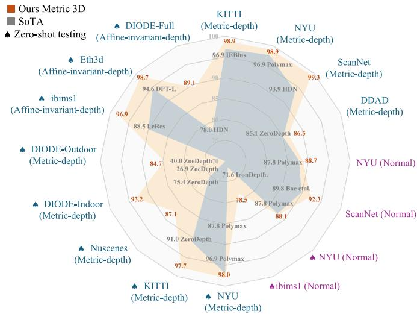
Fig. 1. Comparisons with SoTA methods on 16 depth and normal benchmarks. Radar-map of our Metric3D V2 v.s. SoTA methods from different works, on (1) Metric depth benchmarks, see ‘(Metric-depth)’. (2) Affine-invariant depth benchmarks, see ‘(Affine-invariant-depth)’. (3) Surface normal benchmarks, see ‘(Normal)’. Zero-shot testing is denoted by ‘♠’. Here percentage accuracy is used for depth benchmarks and 30◦ percentage accuracy is for normal. Both higher values are for better performance. We establish new SoTA on a wide range of depth and normal benchmarks.
We propose targeted solutions for the challenges of zero-shot metric depth and surface normal estimation. For metric-scale recovery, we first analyze the metric ambiguity issues in monocular depth estimation and study different camera parameters in depth, including the pixel size, focal length, and sensor size. We observe that the focal length is the critical factor for accurate metric recovery. By design, affine-invariant depth methods do not take the focal length information into account during training. As shown in Section III-A, only from the image appearance, various focal lengths may cause metric ambiguity, thus they decouple the depth scale in training. To solve the problem of varying focal lengths, CamConv [38] encodes the camera model in the network, which enforces the network to implicitly understand camera models from the image appearance and then bridges the imaging size to the real-world size. However, training data contains limited images and types of cameras, which challenges data diversity and network capacity. We propose a canonical camera transformation method in training, inspired by the canonical pose space from human body reconstruction methods [39]. We transform all training data to a canonical camera space where the processed images are coarsely regarded as captured by the same camera. To achieve such transformation, we propose two different methods. The first one tries to adjust the image appearance to simulate the canonical camera, while the other one transforms the ground-truth labels for supervision. Camera models are not encoded in the network, making our method easily applicable to existing architectures. During inference, a de-canonical transformation is employed to recover metric information. To further boost the depth accuracy, we propose a random proposal normalization loss. It is inspired by the scale-shift invariant loss [25], [27], [29] decoupling the depth scale to emphasize the single image’s distribution. However, they perform on the whole image, which inevitably squeezes the fine-grained depth difference. We propose to randomly crop several patches from images and enforce the scale-shift invariant loss [25], [27] on them. Our loss emphasizes the local geometry and distribution of the single image.
For surface normal, the biggest challenge is the lack of diverse (outdoor) annotations. Compared to reconstruction-based annotation methods [35], [40], directly producing normal labels from network-predicted depth is more efficient and scalable. The quality of such pseudo-normal labels, however, is bounded by the accuracy of the depth network. Fortunately, we observe that robust metric depth models are scalable geometric learners, containing abundant information for normal estimation. Weak supervision from the pseudo normal annotations transformed by learned metric depth can effectively prevent the normal estimator from collapsing caused by GT absence. Furthermore, this supervision can guide the normal estimator to generalize on largescale unlabeled data. Based on such observation, we propose a joint depth-normal optimization module to distill knowledge from diverse depth datasets. During optimization, our normal estimator learns from three sources: (1) Groundtruth normal labels, though they are much fewer compared to depth annotations (2) An explicit learning objective to constrain depth-normal consistency. (3) Implicit and thorough knowledge transfer from depth to normal through feature fusion, which is more tolerant to unsatisfactory initial prediction than the explicit counterparts [41], [42]. To achieve this, we implement the optimization module using deep recurrent blocks. While previous researchers have employed similar recurrent modules to optimize depth [42], [43], [44], disparity [45], ego-motion [37], or optical flows [46], it is the first time that normal is iteratively optimized together with depth in a learning-based scheme. Benefiting from the joint optimization module, our models can efficiently learn normal knowledge from large-scale depth datasets even without labels.
With the proposed method, we can stably scale up model training to 16 million images from 16 datasets of diverse scene types (indoor and outdoor, real or synthetic data), camera models (tens of thousands of different cameras), and annotation categories (with or without normal), leading to zero-shot transferability and significantly improved accuracy. Fig. 4 illustrates how the large-scale data with depth annotations directly facilitate metric depth and surface normal learning. The metric depth and normal given by our model directly broaden the applications in downstream tasks. We achieve state-of-the-art performance on over 16 depth and normal benchmarks, see Fig. 1. Our model can accurately reconstruct metric 3D from randomly collected Internet images, enabling plausible single-image metrology. For examples (Fig. 3), we recovery real-world metric to improve monocular SLAM [37], [47] and facilitate large-scale 3D reconstruction [48]. Our main contributions can be summarized as:
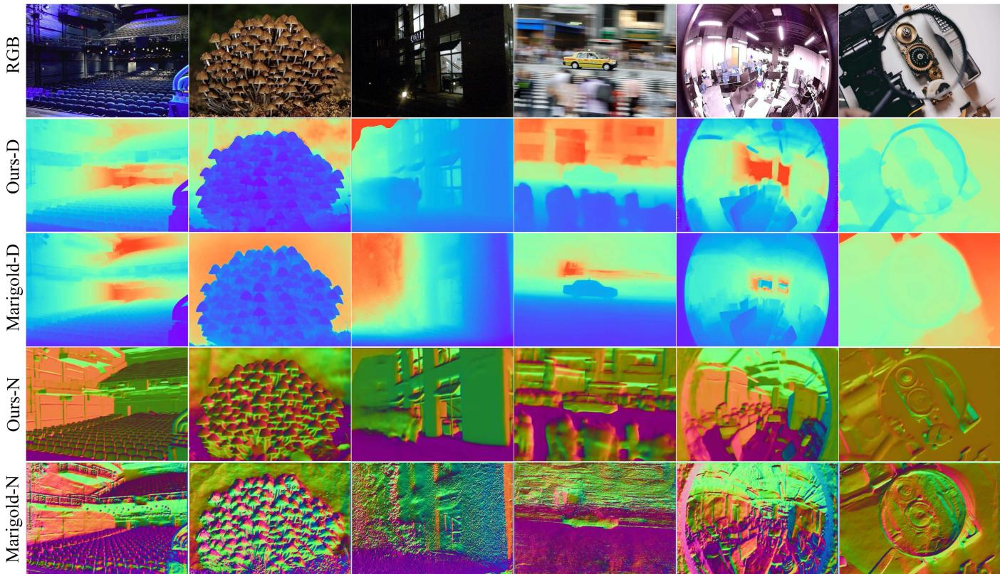
Fig. 2. Surface normal (N) and monocular depth (D) comparisons on diverse web images. Our method, directly estimating metric depths and surface normals, shows powerful generalization in a variety of scenarios, including indoor, outdoor, poor-visibility, motion blurred, and fisheye images. Visualized results come from our ViT-large-backbone estimator. Marigold is a strong and robust diffusion-based monocular depth estimation method, but its recovered surface normals from the depth show various artifacts.
- We propose a canonical camera transformation method to address metric depth ambiguity across different camera settings. This approach facilitates training zero-shot monocular metric depth models using large-scale datasets.
- We design a random proposal normalization loss to effectively improve metric depth.
- We propose a joint depth-normal optimization module to learn normal on large-scale datasets without normal annotation, distilling knowledge from the metric depth estimator.
- Our models rank 1st on a wide variety of depth and surface normal benchmarks. It can perform high-quality 3D metric structure recovery in the wild and benefit several downstream tasks, such as mono-SLAM [37], [49], 3D scene reconstruction [48], and metrology [50].
II. RELATED WORK
3D reconstruction from a single image: The reconstruction of diverse objects from a singular image has been extensively investigated in prior research [51], [52], [53]. These methodologies exhibit proficiency in generating high-fidelity 3D models encompassing various entities such as cars, planes, tables, and human bodies [54], [55]. The primary challenge lies in optimizing the recovery of object details, devising efficient representations within constrained memory resources, and achieving generalization across a broader spectrum of objects. However, these approaches typically hinge upon learning object-specific or instance-specific priors, often derived from 3D supervision, thereby rendering them unsuitable for comprehensive scene reconstruction. In addition to the aforementioned efforts on object reconstruction, several studies focus on scene reconstruction from single images. Saxena et al. [56] adopt an approach that segments the entire scene into multiple small planes, with the 3D structure represented based on the orientation and positioning of these planes. More recently, LeReS [25] proposed employing a robust monocular depth estimation model for scene reconstruction. Nonetheless, their method is limited to recovering shapes up to a certain scale. Zhang et al. [57] recently introduced a zero-shot geometry-preserving depth estimation model capable of providing depth predictions up to an unknown scale. In contrast to the aforementioned methodologies, our approach excels in recovering the metric 3D structure of scenes.

Fig. 3. Top (metrology for a complex scene): we use two phones (iPhone14 pro and Samsung Galaxy S23) to capture the scene and measure the size of several objects, including a drone which has never occurred in the whole training set. With the photos’ metadata, we perform 3D metric reconstruction and then measure object sizes (marked in red), which are close to the ground truth (marked in yellow). Compared with ZoeDepth [36], our measured sizes are closer to ground truth Bottom (dense SLAM mapping): existing SoTA mono-SLAM methods usually face scale drift problems (see the red arrows) in large-scale scenes and are unable to achieve the metric scale, while, naively inputting our metric depth, Droid-SLAM [37] can recover much more accurate trajectory and perform the metric dense mapping (see the red measurements). Note that all testing data are unseen to our model.
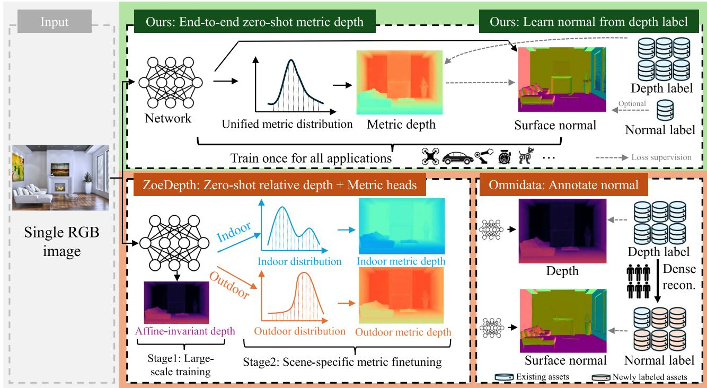
Fig. 4. Overall methodology. Our method takes a single image to predict the metric depth and surface normal simultaneously. We apply large-scale data training directly for metric depth estimation rather than affine invariant depth, enabling end-to-end zero-shot metric depth estimation for various applications using a single model. For normals, we enable learning from depth labels only, alleviating the demand for dense reconstruction to generate large-scale normal labels.
Supervised monocular depth estimation: Following the establishment of several benchmarks [58], [59], neural networkbased methods [17], [19], [30] have dominated this task. These approaches often regress continuous depth by aggregating the information from an image [60]. However, since depth distribution varies significantly with different RGB values, some methods tend to discretize depth and reformulate the problem as a classification task [18] for better performance. The generalization of deep models for 3D metric recovery faces two challenges: adapting to diverse scenes and predicting accurate metric information under various camera settings. Recent methods [18], [21], [22] have effectively addressed the first challenge by creating large-scale relative depth datasets like DIW [24] and OASIS [23] to learn relative relations, which lose geometric structure information. To enhance geometry, methods like Mi-DaS [27], LeReS [25], and HDN [29] employ affine-invariant depth learning. These approaches, utilizing large-scale data, have continuously improved performance and scene generalization. However, they inherently struggle to recover metric information. Thus, achieving both strong generalization and accurate metric data across diverse scenes remains a key challenge to be addressed. Con-currently, ZoeDepth [36], ZeroDepth [61], and UniDepth [62] apply varying strategies to tackle this challenge.
Surface normal estimation: Compared to metric depth, surface normal suffers no metric ambiguity and preserves local geometry better. These properties attract researchers to apply normal in various vision tasks like localization [11], mapping [63], and 3D scene reconstruction [6], [64]. Currently, learning-based methods [32], [33], [34], [42], [64], [65], [66], [67], [68], [69], [70], [71], [72] have dominated monocular surface normal estimation. Since normal labels required for training cannot be directly captured by sensors, previous works use [41], [58], [65], [67] kernel functions to annotate normal from dense indoor depth maps [58]. These annotations become incomplete on reflective surfaces and inaccurate at object boundaries. To learn from such imperfect annotations, GeoNet [41] proposes to enforce depth-normal consistency with mutual transformation modules, ASN [71], [72] propose a novel adaptive surface normal constraint to facilitate joint depth-normal learning, and Bae et al. [33] propose an uncertainty-based learning objective. Nonetheless, it is challenging for such methods to further increase their generalization, due to the limited dataset size and the diversity of scenes, especially for outdoor scenarios. Omni-data [35] advances to fill this gap by building 1300M frames of normal annotation. Normal-in-the-wild [73] proposes a pipeline for efficient normal labeling. A con-current work DSINE [74] also employs diverse datasets to train generalizable surface normal estimators. However, further scaling up normal labels remains difficult. This underscores research significance in finding an efficient way to distill prior from other types of annotation.
Deep iterative refinement for geometry: Iterative refinement enables multi-step coarse-to-fine prediction and benefits a wide range of geometry estimation tasks, such as optical flow estimation [46], [75], [76], depth completion [43], [77], [78], and stereo matching [45], [79], [80]. Classical iterative refinements [75], [77] optimize directly on high-resolution outputs using high-computing-cost operators, limiting researchers from applying more iterations for better predictions. To address this limitation, RAFT [46] proposes to optimize an intermediate low-resolution prediction using ConvGRU modules. For monocular depth estimation, IEBins [44] employs similar methods to optimize depth-bin distribution. Differently, IronDepth [42] propagates depth on pre-computed local surfaces. Regarding surface normal refinement, Lenssen et al. [81] propose a deep iterative method to optimize normal from point clouds. Zhao et al. [82] design a solver to refine depth and normal jointly, but it requires multi-view prior and per-sample post optimization. Without multi-view prior, such a non-learnable optimization method could fail due to unsatisfactory initial predictions. All the monocular methods [42], [44], [81], however, iterate over either depth or normal independently. In contrast, our joint optimization module tightly couples depth and normal with each other.
Large-scale data training: Recently, various natural language problems and computer vision problems [83], [84], [85] have achieved impressive progress with large-scale data training. CLIP [84] is a promising classification model trained on billions of paired image-language data pairs, achieving achieves stateof-the-art performance zero-shot classification benchmarks. Dinov2 [86] collects 142M images to conduct vision-only selfsupervised learning for vision transformers [87]. Generative models like LDM [88] have also undergone billion-level data pre-training. For depth prediction, large-scale data training has been widely applied. Ranft et al. [27] mix over 2 million data in training, LeReS [26] collects over 300 thousands data, Eftekhar et al. [35] also merge millions of data to build a strong depth prediction model. To train a zero-shot surface normal estimator, Omni-data [35] performs dense reconstruction to generate 14M frames with surface normal annotations.
III. METHOD
Preliminaries: We consider the pin-hole camera model with intrinsic parameters formulated as: [0, 0, 1]], where is the focal length (in micrometers), δ is the pixel size (in micrometers), and is the principle center. is the pixel-represented focal length.
A. Ambiguity Issues in Metric Depth Estimation
Fig. 5 illustrates an instance of photographs captured using diverse cameras and at varying distances. Solely based on visual inspection, one might erroneously infer that the last two images originate from a comparable location and are captured by the same camera. However, due to differing focal lengths, these images are indeed captured from distinct locations. Consequently, accurate knowledge of camera intrinsic parameters becomes imperative for metric estimation from a single image; otherwise, the problem becomes ill-posed. Recent methodologies, such as MiDaS [27] and LeReS [25], mitigate this metric ambiguity by decoupling metric estimation from direct supervision and instead prioritize learning affine-invariant depth.
Fig. 6(a) depicts the pin-hole perspective projection, where object A located at distance is projected to Adhering to the principle of similarity, it is obvious that:
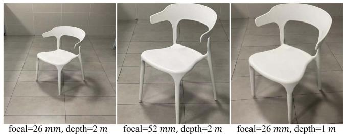
Fig. 5. Photographs of a chair captured at different distances with different cameras. The first two photos are captured at the same distance but with different cameras, while the last one is taken at a closer distance with the same camera as the first one.
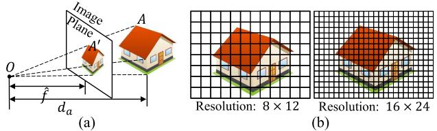
Fig. 6. Pinhole camera model. (a) Object A positioned at a distance undergoes projection onto the image plane. (b) Employing two cameras for capturing an image of the car. The left one has a larger pixel size. Although the projected imaging sizes are the same, the pixel-represented images (resolution) are different.
where and are the real and imaging size respectively. The symbolˆ· signifies that variables are expressed in physical metrics , millimeters). To ascertain from a single image, one must have access to the focal length, imaging size of the object, and real-world object size. Estimating the focal length from a single image is challenging and inherently ill-posed. Despite numerous methods having been explored [25], [89], achieving satisfactory accuracy remains elusive. Hereby, we simplify the scenario by assuming known focal lengths for the training/test images. In contrast, understanding the imaging size is much easier for a neural network. To obtain the real-world object size, a neural network needs to understand the semantic scene layout and the object, at which a neural network excels. We define showing that is proportional to α.
We observe the following regarding sensor size, pixel size, and focal length.
O1: Sensor size and pixel size do not affect metric depth estimation. Based on perspective projection , sensor size only influences the field of view (FOV) and is not relevant to hence it does not affect metric depth estimation. For pixel size, consider two cameras with different pixel sizes but the same focal length , capturing the same object at distance . Fig. 6(b) displays their captured images. According to the preliminaries, the pixel-represented focal length is Since the second camera has smaller pixel sizes, the resolution of the pixel-represented image is given by , despite both having the same projected imaging size . According to (1), we have $\begin{array} { r } { \frac { \hat { f } } { \delta _ { 1 } \cdot S _ { 1 } ^ { \prime } } = \frac { \hat { f } } { \delta _ { 2 } \cdot S _ { 2 } ^ { \prime } } } \end{array}\alpha _ { 1 } = \alpha _ { 2 }d _ { 1 } = d _ { 2 }$ This means that variations in camera sensors do not impact the estimation of metric depth.
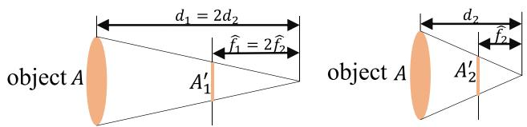
Fig. 7. Illustration of two cameras with different focal length at different distance. As and A is projected to two image planes with the same imaging size
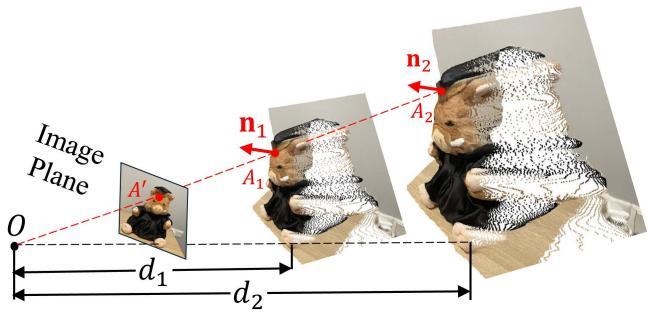
Fig. 8. The metric-agnostic property of normal. With differently predicted metrics and , the pixel on the image will be back-projected to 3D points and respectively. The surface normal n1 at and at remain the same.
O2: The focal length is vital for metric depth estimation. Fig. 5 shows the challenge of metric ambiguity caused by an unspecified focal length, which is further discussed in Fig. 7. In the scenario where two cameras are positioned at distances , the imaging sizes remain consistent for both cameras. As a result, the neural network struggles to distinguish between different supervision labels based solely on visual cues. To address this issue, we propose a canonical camera transformation method to reduce conflicts between supervision requirements and image representations.
Unlike depth, surface normal does not have any metric ambiguity problem. In Fig. 8, we illustrate this concept with two depth maps at varying scales, denoted as and , featuring distinct metrics d1 and d2, respectively, where . After upprojecting the depth to the 3D point cloud, the dolls are in different depths and . However, the surface normals and corresponding to a certain pixel remain the same.
B. Canonical Camera Transformation
The fundamental concept entails establishing a canonical camera space , with in experimental settings) and transposing all training data into this designated space. Consequently, all data can be broadly construed as being captured by the canonical camera. We propose two transformation methods, i.e. either transforming the input image or the ground-truth (GT) label ). The initial intrinsics are
Method1: transforming depth labels (CSTM_label). Fig. 5’s ambiguity is for depths. Consequently, our initial approach directly addresses this issue by transforming the ground-truth depth labels. Specifically, we rescale the ground-truth depth using the ratio during training, denoted as ∗. The original camera model undergoes transformation to . In inference, the predicted depth exists in the canonical space and necessitates a de-canonical transformation to restore metric information, expressed as . It is noteworthy that the input I remains unaltered, represented as

Fig. 9. Pipeline. Given an input image I, we first transform it to the canonical space using CSTM. The transformed image is fed into a standard depth-normal estimation model to produce the predicted metric depth in the canonical space and metric-agnostic surface normal N. During training, is supervised by a GT depth which is also transformed into the canonical space. In inference, after producing the metric depth in the canonical space, we perform a de-canonical transformation to convert it back to the space of the original input I. The canonical space transformation and de-canonical transformation are executed using camera intrinsics. The predicted normal N is supervised by depth-normal consistency via the recovered metric depth D as well as GT normal , if available.
Method2: transforming input images (CSTM_image). From an alternate perspective, the ambiguity arises due to the resemblance in image appearance. Consequently, this methodology aims to alter the input image to emulate the imaging effects ofthe canonical camera. Specifically, the image I undergoes resizing using the ratio , denoted as , where signifies image resizing. As a result of resizing the optical center, the canonical camera model becomes The ground-truth labels are resized without scaling, represented as . In inference, the de-canonical transformation involves resizing the prediction to its original dimensions without scaling, expressed as
While similar transformations have been employed in MPSD [90] to normalized depth prediction, our approaches apply these modules to predict metric depth directly.
Fig. 9 shows the pipeline. After adopting either transformation, a patch is randomly cropped for training purposes. This cropping operation solely adjusts the field of view (FOV) and the optical center, thus averting any potential metric ambiguity issues. In the labels transformation approach, and , while in the images transformation method, and . Throughout the training process, the transformed ground-truth depth labels are employed as supervision. Importantly, since surface normals are not susceptible to metric ambiguity, no transformation is applied to normal labels
C. Jointly Optimizing Depth and Normal
We propose to optimize metric depth and surface normal jointly in an end-to-end manner. This optimization is primarily aimed at leveraging a large amount of annotation knowledge available in depth datasets to improve normal estimation, particularly in outdoor scenarios where depth datasets contain significantly more annotations than normal datasets. In our experiments, we collect from the community 9488K images with depth annotations across 14 outdoor datasets while less than 20K outdoor normal-labeled images, presented in Table V.
To facilitate knowledge flow across the depth and normal, we implement the learning-based optimization with recurrent refinement blocks, as depicted in Fig 10. Unlike previous monocular methods [42], [44], our method updates both depth and normal iteratively through these blocks. Inspired by RAFT [45], [46], we iteratively optimize the intermediate low-resolution depth and unnormalized normal , where ˆ denotes low resolution prediction , and , and the subscript means the depth is in canonical space. As sketched in Fig. 10, and represent the low-resolution depth and normal optimized after step t, where denotes the step index. Initially, at step and are given by the decoder. In addition to updating depth and normal, the optimization module also updates hidden feature maps which are initialized by the decoder. During each iteration, the learned recurrent block Foutput updates and renews the hidden features H:
The updates are then applied for updating the predictions:
To be more specific, the recurrent block Fcomprises a ConvGRU sub-block and two projection heads. First, the ConvGRU subblock updates the hidden features taking all the variables as inputs. Subsequently, the two branched projection heads and estimate the updates and respectively. A more comprehensive representation of (2), therefore, can be written as:
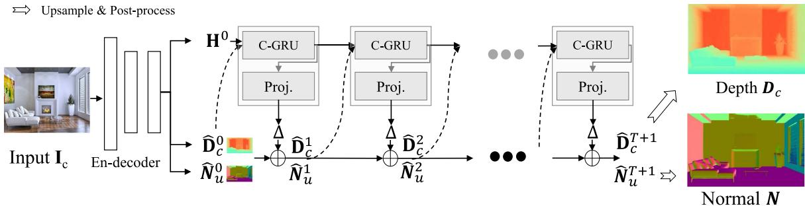
Fig. 10. Joint depth and normal optimization. In the canonical space, we deploy recurrent blocks composed of ConvGRU sub-blocks (C-RGU) and projection heads (Proj.) to predict the updates Δ. During optimization, intermediate low-resolution depth and normal are initially given by the decoder, and then iteratively refined by the predicted updates . After iterations, the optimized intermediate predictions are upsampled and post-processed to obtain the final depth in the canonical space and the final normal N.
For detailed structures of the refinement module we recommend readers refer to supplementary materials.
After iterative steps, we obtain the well-optimized lowresolution predictions and . These predictions are then up-sampled and post-processed to generate the final depth and surface normal N:
where is the ReLU function to guarantee depth is nonnegative, and represents normalization to ensure for all pixels.
In a general formulation, the end-to-end network in Fig. 10 can be rewritten as:
where is the network’s parameters.
D. Supervision
The training objective is:
where and are transformed ground-truth depth labels and images in the canonical space denotes normal labels, L is the supervision loss to be illustrated as following.
Random proposal normalization loss: To boost the performance of depth estimation, we propose a random proposal normalization loss (RPNL). The scale-shift invariant loss [25], [27] is widely applied for the affine-invariant depth estimation, which decouples the depth scale to emphasize the single image distribution. However, such normalization based on the whole image inevitably squeezes the fine-grained depth difference, particularly in close regions. Inspired by this, we propose to randomly crop several patches from the ground truth and the predicted depth . Then we employ the median absolute deviation normalization [91] for paired patches. By normalizing the local statistics, we can enhance local contrast. The loss function is as follows:
where and are the ground truth and predicted depth respectively. and is the median of depth. M is the number of proposal crops, which is set to 32. During training, proposals are randomly cropped from the image by 0.125 to of the original size. Furthermore, several other losses are employed, including the scale-invariant logarithmic loss [60] pair-wise normal regression loss , virtual normal loss [18] . Note is a variant of L1 loss. The overall losses are as follows.
Normal loss: To supervise normal prediction, we employ two distinct loss functions depending on the availability of groundtruth (GT) normals N∗. As presented in Fig. 9, when GT normals are provided, we utilize an aleatoric uncertainty-aware loss [33] to supervise prediction N. Alternatively, in the absence of GT normals, we propose a consistency loss to align the predicted depth and normal. This loss is computed based on the similarity between a pseudo-normal map generated from the predicted depth using the least square method [41], and the predicted normal itself. Different from previous methods, [33], [41], this loss operates as a self-supervision mechanism, requiring no depth or normal ground truth labels. Note that here we use the depth D in the real world instead of the one in the canonical space to calculate depth-normal consistency. The overall losses are as follows.
where serve as weights to balance the loss items.
IV. EXPERIMENTS
Dataset details: We have meticulously assembled a comprehensive dataset incorporating 16 publicly available RGB-D datasets, comprising a cumulative total of over 16 million data points specifically intended for training purposes. This dataset encompasses a diverse array of both indoor and outdoor scenes. Notably, approximately 10 million frames within the dataset are annotated with normals, with a predominant focus on annotations relating to indoor scenes. It is noteworthy to highlight that all datasets have provided camera intrinsic parameters. Additionally, beyond the test split of training datasets, we have procured 7 previously unobserved datasets to facilitate robustness and generalization evaluations. Detailed descriptions of the utilized training and testing data are provided in Table V.
Implementation details: In our experiments, we employ different network architectures and aim to provide diverse choices for the community, including convnets and transformers. For convnets, we employ an UNet architecture with the ConvNextlarge [103] backbone. ImageNet-22K pre-trained weights are used for initialization. For transformers, we apply DINO v2- reg [86], [104] vision transformers [87] (ViT) as backbones, DPT [28] as decoders.
We use AdamW with a batch size of 192, an initial learning rate 0.0001 for all layers, and the polynomial decaying method with the power of0.9. We train our models on 48 A100 GPUs for 800k iterations. Following the DiverseDepth [18], we balance all datasets in a mini-batch to ensure each dataset accounts for an almost equal ratio. During training, images are processed by the canonical camera transformation module, flipped horizontally with a 50% chance, and then randomly cropped into pixels for convnets and for vision transformers. In the ablation experiments, training settings are different as we sample 5000 images from each dataset for training. We trained on 8 GPUs for 150K iterations. Details ofnetworks architectures, training setups, and efficiency analysis are presented in the supplementary materials. Fine-tuning experiments on KITTI and NYU are conducted on 8 GPUs with 20K further steps.
Evaluation details for monocular depth and normal estimation: a) To demonstrate the robustness of our metric depth estimation method, we evaluate on 7 zero-shot benchmarks, including NYUv2, KITTI [107], ScanNet [108], NuScenes [109], iBIMS-1 [110], and DIODE [111] (both indoor and outdoor). Following previous studies, we use metrics such as absolute relative error (AbsRel), accuracy under threshold 1, 2, 3), root mean squared error (RMS), root mean squared error in log space (RMS_log), and log10 error (log10). We report results for zero-shot and fine-tuning testing on the KITTI and NYU benchmarks. b) For normal estimation tasks and ablations, employ several error metrics to assess performance. Specifically, we calculate the mean (mean), median (median), and rooted mean square (RMS_normal) ofthe angular error as well as the accuracy under threshold of consistent with methodologies established in previous studies [33]. We conduct in-domain evaluation using the Scannet dataset, while the NYU and iBIMS-1 datasets are reserved for zero-shot generalization testing. c) Furthermore, we also follow current affine-invariant depth benchmarks [25], [29] (Tab. IV) to evaluate the generalization ability on 5 zero-shot datasets, i.e., NYUv2, DIODE, ETH3D, ScanNet [108], and KITTI. We mainly compare with large-scale data trained models. Note that in this benchmark we follow existing methods to apply the scale shift alignment before evaluation.
TABLE IQUANTITATIVE COMPARISON ON NYUV2 AND KITTI METRIC DEPTHBENCHMARKS
| Method | δ1↑ | δ2↑ | δ3↑ | AbsRel↓ | log10.↓ | RMS↓ |
| NYUv2 Metric Depth Benchmark | ||||||
| Li et al..[92] | 0.788 | 0.958 | 0.991 | 0.143 | 0.063 | 0.635 |
| Laina et al.. [93] | 0.811 | 0.953 | 0.988 | 0.127 | 0.055 | 0.573 |
| VNL [30] | 0.875 | 0.976 | 0.994 | 0.108 | 0.048 | 0.416 |
| TrDepth [20] | 0.900 | 0.983 | 0.996 | 0.106 | 0.045 | 0.365 |
| Adabins [19] | 0.903 | 0.984 | 0.997 | 0.103 | 0.044 | 0.364 |
| NeWCRFs [17] | 0.922 | 0.992 | 0.998 | 0.095 | 0.041 | 0.334 |
| IEBins [44] | 0.936 | 0.992 | 0.998 | 0.087 | 0.038 | 0.314 |
| ZeroDepth [61] ZŠ | 0.901 | 0.961 | 0.100 | 0.380 | ||
| Polymax [34] ZS | 0.969 | 0.996 | 0.999 | 0.067 | 0.029 | 0.250 |
| ZoeDepth [36] FT | 0.953 | 0.995 | 0.999 | 0.077 | 0.033 | 0.277 |
| ZeroDepth [61] FT | 0.954 | 0.995 | 1.000 | 0.074 | 0.103 | 0.269 |
| [94] FT | 0.984 | 0.998 | 1.000 | 0.056 | 0.024 | 0.206 |
| Ours Conv-L CSTM_image ZS | 0.925 | 0.983 | 0.994 | 0.092 | 0.040 | 0.341 |
| Ours Conv-L CSTM_label ZS | 0.944 | 0.986 | 0.995 | 0.083 | 0.035 | 0.310 |
| Ours ViT-L CSTM_label ZS | 0.975 | 0.994 | 0.998 | 0.063 | 0.028 | 0.251 |
| Ours ViT-g CSTM_label ZS | 0.980 | 0.997 | 0.999 | 0.067 | 0.030 | 0.260 |
| Ours ViT-L CSTM_label FT | 0.989 | 0.998 | 1.000 | 0.047 | 0.020 | 0.183 |
| Ours ViT-g CSTM_label FT | 0.987 | 0.997 | 0.999 | 0.045 | 0.015 | 0.187 |
| Method | δ1↑ | δ2↑ | δ3↑ | AbsRel ↓ | RMS↓ | RMS_log ↓ |
| KITTI Metric Depth Benchmark | ||||||
| Guo et al. [95] | 0.902 | 0.969 | 0.986 | 0.090 | 3.258 | 0.168 |
| VNL [30] | 0.938 | 0.990 | 0.998 | 0.072 | 3.258 | 0.117 |
| TrDepth [20] | 0.956 | 0.994 | 0.999 | 0.064 | 2.755 | 0.098 |
| Adabins [19] | 0.964 | 0.995 | 0.999 | 0.058 | 2.360 | 0.088 |
| NeWCRFs [17] | 0.974 | 0.997 | 0.999 | 0.052 | 2.129 | 0.079 |
| IEBins [44] | 0.978 | 0.998 | 0.999 | 0.050 | 2.011 | 0.075 |
| ZeroDepth [61] ZS | 0.910 | 0.980 | 0.996 | 0.102 | 4.044 | 0.172 |
| ZoeDepth [36] FT | 0.971 | 0.996 | 0.999 | 0.057 | 2.281 | 0.082 |
| ZeroDepth [61] FT | 0.968 | 0.995 | 0.999 | 0.053 | 2.087 | 0.083 |
| DepthAnything [94] FT | 0.982 | 0.998 | 1.000 | 0.046 | 1.869 | 0.069 |
| Ours Conv-L CSTM_image ZS | 0.967 | 0.995 | 0.999 | 0.060 | 2.843 | 0.087 |
| Ours Conv-L CSTM_label ZS | 0.964 | 0.993 | 0.998 | 0.058 | 2.770 | 0.092 |
| Ours ViT-L CSTM_label ZS | 0.974 | 0.995 | 0.999 | 0.052 | 2.511 | 0.074 |
| Ours ViT-g CSTM_label ZS | 0.977 | 0.996 | 0.999 | 0.051 | 2.403 | 0.080 |
| Ours ViT-L CSTM_label FT | 0.985 | 0.998 | 0.999 | 0.044 | 1.985 | 0.064 |
| Ours ViT-g CSTM_label FT | 0.989 | 0.998 | 1.000 | 0.039 | 1.766 | 0.060 |
Methods overfitting the benchmarkc are marked with grey, while robust depth estimation methods are in blue. 'ZS' denotes the zero-shot testing, and 'FT' means the method is further finetuned on the benchmark. Among all zero-shot testing (ŻS) results, our methods performs the best and is even better than overfitting methods. Further fine-tuning (FT) helps our method surpass all known methods. ranked by the averaged ranking among all metrics. Best results are in bold and second bests are underlined
We report results with different canonical transformation methods (CSTM_lable and CSTM_image) on the ConvNext-Large model (Conv-L in Tables I and II). As CSTM_label is slightly better, more results using this method from multi-size ViT-models (ViT-S for Small, ViT-L for Large, ViT-g for giant2) are reported. Note that all models for zero-shot testing use the same checkpoints except for fine-tuning experiments.
Evaluation details for reconstruction and SLAM: a) To evaluate our metric 3D reconstruction quality, we randomly sample 9 unseen scenes from NYUv2 and use colmap [112] to obtain the camera poses for multi-frame reconstruction. Chamfer distance and the F-score [113] are used to evaluate the reconstruction accuracy. b) In dense-SLAM experiments, following Li et al. [114], we test on the KITTI odometry benchmark [59] and evaluate the average translational and rotational RMS errors [59].
Evaluation on metric depth benchmarks: To evaluate the accuracy of predicted metric depth, first, we compare with state-ofthe-art (SoTA) metric depth prediction methods on NYUv2 [58], KITTI [107]. We use the same model to do all evaluations. Results are reported in Table I. First, comparing with existing overfitting methods, which are trained on benchmarks for hundreds of epochs, our zero-shot testing (‘ZS’ in the table) without any fine-tuning or metric adjustment already achieves comparable or even better performance on some metrics. Then comparing with robust monocular depth estimation methods, such as Zerodepth [61] and ZoeDepth [36], our zero-shot testing is also better than them. Further post finetuning (‘FT in the table’) lifts our method to the 1st rank.
TABLE II
QUANTITATIVE COMPARISON OF SURFACE NORMALS ON NYUV2, IBIMS-1,AND SCANNET NORMAL BENCHMARKS
| Method | 11.25°↑ | 22.5°↑ | 30°↑ | mean↓ | median↓ | RMS normal.↓ |
| NYUv2 Normal Benchmark | ||||||
| Ladicky et al. [69] | 0.275 | 0.490 | 0.587 | 33.5 | 23.1 | |
| Fouhey et al.. [96] | 0.405 | 0.541 | 0.589 | 35.2 | 17.9 | |
| Deep3D [66] | 0.420 | 0.612 | 0.682 | 20.9 | 13.2 | |
| Eigen et al. [67] | 0.444 | 0.672 | 0.759 | 20.9 | 13.2 | |
| SkipNet [97] | 0.479 | 0.700 | 0.778 | 19.8 | 12.0 | 28.2 |
| SURGE [98] | 0.473 | 0.689 | 0.766 | 20.6 | 12.2 | |
| GeoNet [41] | 0.484 | 0.715 | 0.795 | 19.0 | 11.8 | 26.9 |
| PAP [99] | 0.488 | 0.722 | 0.798 | 18.6 | 11.7 | 25.5 |
| GeoNet++ [65] | 0.502 | 0.732 | 0.807 | 18.5 | 11.2 | 26.7 |
| Bae et al. [33] | 0.622 | 0.793 | 0.852 | 14.9 | 7.5 | 23.5 |
| FrameNet [40] ZS | 0.507 | 0.720 | 0.795 | 18.6 | 11.0 | 26.8 |
| VPLNet [100] ZS | 0.543 | 0.738 | 0.807 | 18.0 | 9.8 | |
| TiltedSN [32] ZS | 0.598 | 0.774 | 0.834 | 16.1 | 8.1 | 25.1 |
| Omnidata [35] ZS | 0.577 | 0.777 | 0.838 | 16.7 | 9.6 | 25.0 |
| Bae et al. [33] ZS | 0.597 | 0.775 | 0.837 | 16.0 | 8.4 | 24.7 |
| Polymax [34] ZS | 0.656 | 0.822 | 0.878 | 13.1 | 7.1 | 20.4 |
| Ours ViT-L CSTM_label ZS | 0.662 | 0.831 | 0.881 | 13.1 | 7.1 | 21.1 |
| Ours ViT-g CSTM_label ZS | 0.664 | 0.831 | 0.881 | 13.3 | 7.0 | 21.3 |
| Ours ViT-L CSTM_label FT | 0.688 | 0.849 | 0.898 | 12.0 | 6.5 | 19.2 |
| Ours ViT-g CSTM_label FT | 0.662 | 0.837 | 0.889 | 13.2 | 7.5 | 20.2 |
| ibims-1 Normal Benchmark | ||||||
| VNL [30] ZS | 0.179 | 0.386 | 0.494 | 39.8 | 30.4 | 51.0 |
| BTS [101] ZS | 0.130 | 0.295 | 0.400 | 44.0 | 37.8 | 53.5 |
| Adabins [19] ZS | 0.180 | 0.387 | 0.506 | 37.1 | 29.6 | 46.9 |
| IronDepth [42] ZS | 0.431 | 0.639 | 0.716 | 25.3 | 14.2 | 37.4 |
| Omnidata [102] ZS | 0.647 | 0.734 | 0.768 | 20.8 | 7.7 | 35.1 |
| Ours ViT-L CSTM_ label ZS | 0.694 | 0.758 | 0.785 | 19.4 | 5.7 | 34.9 |
| Ours ViT-g CSTM_label ZS | 0.697 | 0.762 | 0.788 | 19.6 | 5.7 | 35.2 |
| Omnidata [102] | 0.629 | 0.806 | 0.847 | 15.1 | 8.6 | 23.1 |
| FrameNet [40] | 0.625 | 0.801 | 0.858 | 14.7 | 7.7 | 22.8 |
| VPLNet [100] | 0.663 | 0.818 | 0.870 | 12.6 | 6.0 | 21.1 |
| TiltedSN [32] | 0.693 | 0.839 | 0.886 | 12.6 | 6.0 | 21.1 |
| Bae et al. [33] | 0.711 | 0.854 | 0.898 | 11.8 | 5.7 | 20.0 |
| Ours ViT-L CSTM_label | 0.760 | 0.885 | 0.923 | 9.9 | 5.3 | 16.4 |
| Ours ViT-g CSTM_label | 0.778 | 0.901 | 0.935 | 9.2 | 5.0 | 15.3 |
'ZS' means zero-shot testing and FT' performs post fine-tuneing on the target dataset. Methods trained only on NYU are highlighted with grey. Best results are in bold and second bests are underlined. Our method ranks first over all benchmarks
Furthermore, We collect 5 unseen datasets to do more metric accuracy evaluation. These datasets contain a wide range of indoor and outdoor scenes, including rooms, buildings, and driving scenes. The camera models are also varied. We mainly compare with the SoTA metric depth estimation methods and take their NYUv2 and KITTI models for indoor and outdoor scene evaluation respectively. From Table III, we observe that although NuScenes is similar to KITTI, existing methods face a noticeable performance decrease. In contrast, our model is more robust.
Generalization over diverse scenes: Affine-invariant depth benchmarks decouple the scale’s effect, which aims to evaluate the model’s generalization ability to diverse scenes. Recent impact works, such as MiDaS, LeReS, DPT, Marigold, and DepthAnything achieved promising performance on them. Following them, we test on 5 datasets and manually align the scale and shift to the ground-truth depth before evaluation. Results are reported in Table IV. Although our method enforces the network to recover the more challenging metric, our method outperforms them on all datasets.
Evaluation on surface normal benchmarks: We evaluate our methods on ScanNet, NYU, and iBims-1 surface normal benchmarks. Results are reported in Table II. First, we organize a zeroshot testing benchmark on NYU dataset, see methods denoted with ‘ZS’ in the table. We compare with existing methods which are trained on ScanNet or Taskonomy and have achieved promising performance on them, such as Polymax [34] and Bae et al. [33]. Our method surpasses them over most metrics. Cmparing with methods that have been overfitted the NYU dataset (marked with blue), our zero-shot testing outperforms them on all metrics. Post-finetuning (‘FT’) further boosts the performance. Similarly, we also achieve SoTA performance on iBims-1 and Scannet benchmarks. For iBims-1 dataset, we follow IronDepth [42] to generate the ground-truth normal annotations.
A. Zero-Shot Generalization
Qualitative comparisons of surface normals and depths: We visualize our predictions in Fig. 11. A comparison with another widely used generalized metric depth method, ZoeDepth [36], demonstrates that our approach produces depth maps with superior details on fine-grained structures (objects in row1, suspension lamp in row4, beam in row8), and better foreground/background distinction (row 11, 12). In terms of surface normal prediction, our normal maps exhibits significantly finer details compared to Bae. et al. [33] and can handle some cases where their method fail (row7, 8, 9). Our method not only generalizes well across diverse scenarios but can also be directly applied to unseen camera models like the fisheye camera shown in row 12. More visualization results for in-the-wild images are presented in Fig. 12, including comic-style (Row 2) and CG(computer graphics)-generated objects (Row5)
B. Applications Based on Our Method
We apply the CSTM_image model to various tasks.
3D scene reconstruction: To present our method’s ability to recover real-world metric 3D, we first conduct a quantitative comparison on 9 unseen NYUv2 scenes. We predict per-frame metric depth and fuse these with the provided camera poses, with results detailed in Table VI. We compare our approach to several methods: the video consistent depth prediction method (RCVD [131]), unsupervised video depth estimation (SC-DepthV2 [132]), 3D scene shape recovery (LeReS [25]), affine-invariant depth estimation (DPT [28]), and multi-view stereo reconstruction (DPSNet [48], SimpleRecon [133]). Except for the multi-view approaches and our method, all others require aligning scales with ground truth depth for each frame. While our approach is not specifically designed for video or multi-view reconstruction, it demonstrates promising frame consistency and significantly more accurate 3D scene reconstructions in these zero-shot scenarios. Qualitative comparisons in Fig. 13 reveal that our reconstructions exhibit considerably less noise and fewer Outliers.
Dense-SLAM mapping: Monocular SLAM is a key robotic application that uses a single video input to create trajectories and dense 3D maps. However, due to limited photometric and geometric constraints, existing methods struggle with scale drift in large scenes and fail to recover accurate metric information. Our robust metric depth estimation serves as a strong depth prior for the SLAM system. To demonstrate this, we input our metric depth into the state-of-the-art SLAM system, Droid-SLAM [37], and evaluate the trajectory on KITTI without any tuning. Results are shown in Table VII. With access to accurate per-frame metric depth, Droid-SLAM experiences a significant reduction in translation drift . Additionally, our depth data enables Droid-SLAM to achieve denser and more precise 3D mapping, as illustrated in Fig. 3 and detailed in the supplementary materials.
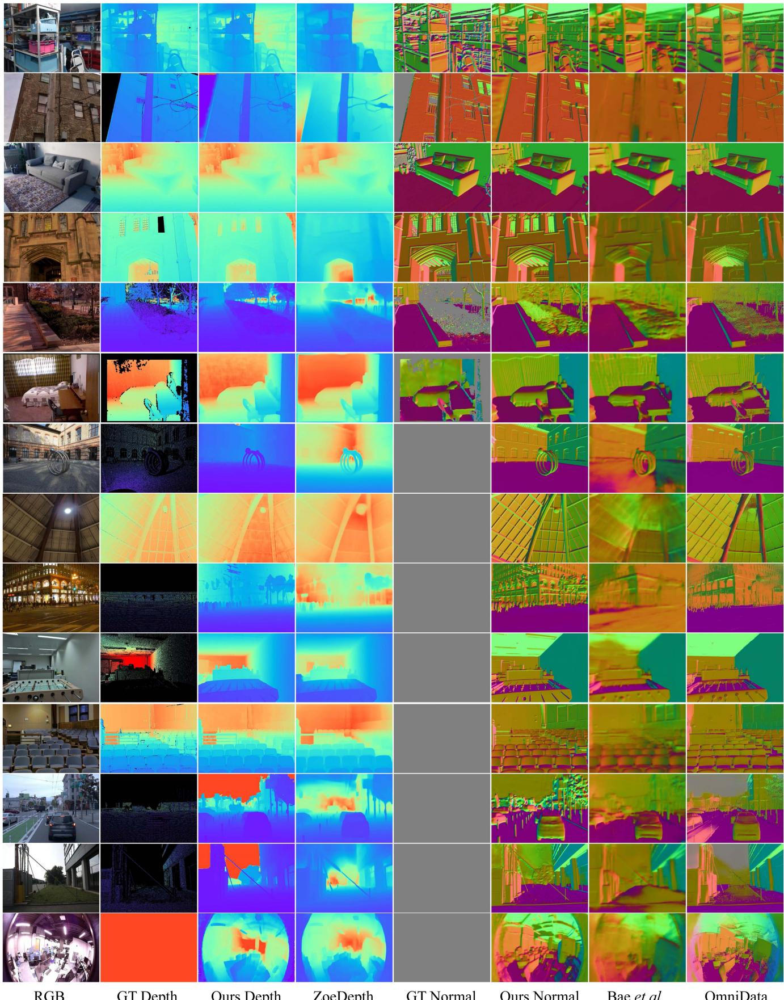
Fig. 11. Qualitative comparisons of metric depth and surface normals for iBims, DIODE, NYU, Eth3d, Nuscenes, and self-collected drone datasets. We present visualization results of our predictions (‘Ours Depth’/‘Ours Normal’), groundtruth labels (‘GT Depth’/‘GT Normal’) and results from other metric depth (‘ZoeDepth’[36]) and surface normal methods (‘Bae et al.’ [33] and ‘OmniData’[35]).
TABLE III
QUANTITATIVE COMPARISON WITH SOTA METRIC DEPTH METHODS ON 5 UNSEEN BENCHMARKS
| Method | Metric Head | DIODE(Indoor) Indoor scenes (AbsRel↓/RMS↓) | iBIMS-1 | DIODE(Outdoor) Outdoor scenes (AbsRel↓/RMS↓) | ETH3D | NuScenes |
| Adabins [19] | KITTI or NYU + | 0.443 / 1.963 | 0.212 /0.901 | 0.865 10.35 | 1.271 6.178 | 0.445 10.658 |
| NewCRFs [17] | KITTI or NYU † | 0.404 / 1.867 | 0.206 / 0.861 | 0.854 9.228 | 0.890 5.011 | 0.400 / 12.139 |
| ZoeDepth [36] | KITTI and NYU | 0.400 1.581 | 0.169 0.711 | 0.269 6.898 | 0.545 3.112 | 0.504 / 7.717 |
| Ours Conv-L CSTM_label | Unified | 0.252 1.440 | 0.160 0.521 | 0.414 6.934 | 0.416 3.017 | 0.154 /7.097 |
| Ours Conv-L CSTM_image | Unified | 0.268 / 1.429 | 0.144 0.646 | 0.535 6.507 | 0.342 2.965 | 0.147 5.889 |
| Ours ViT-L CSTM_image | Unified | 0.093 0.389 | 0.185 0.592 | 0.221 3.897 | 0.357 2.980 | 0.165 9.001 |
| Ours ViT-g CSTM_image | Unified | 0.081 0.359 | 0.249 0.611 | 0.201 3.671 | 0.363 2.999 | 0.129 6.993 |
†: Two different metric heads are trained on KITTI and NYU respectively. ‡: Both metric heads are ensembled by an additional router. For SoTA methods, we use their NYUv2 and KITTI models for indoor and outdoor scene evaluation respectively, while we use the same model for all zero-shot testing.
TABLE IV
COMPARISON WITH SOTA AFFINE-INVARIANT DEPTH METHODS ON 5 ZERO-SHOT TRANSFER BENCHMARKS
| Backbone Method | #Params | #Data Pretrain Train | NYUv2 | KITTI | DIODE(Full) | ScanNet | ETH3D | |||||||
| AbsRel↓ δ1↑ | AbsRel↓ δ1↑ | AbsRel↓ δ1↑ | AbsRel↓ δ1↑ | AbsRel↓ δ1↑ | ||||||||||
| DiverseDepth [18] | ResNeXt50 [105] | 25M | 1.3M | 320K | 0.117 | 0.875 0.190 | 0.704 0.376 | 0.631 | 0.108 | 0.882 | 0.228 | 0.694 | ||
| MiDaS [27] | ResNeXt101 | 88M | 1.3M | 2M | 0.111 | 0.885 | 0.236 | 0.630 | 0.332 | 0.715 0.111 | 0.886 0.184 | 0.752 | ||
| Leres [25] | ResNeXt101 | 1.3M | 354K | 0.090 | 0.916 | 0.149 | 0.784 | 0.271 | 0.766 0.095 | 0.912 | 0.171 | 0.777 | ||
| Omnidata [35] | ViT-Base | 1.3M | 12.2M 0.074 | 0.945 0.149 | 0.835 0.339 | 0.742 0.077 | 0.935 | 0.166 | 0.778 | |||||
| HDN [29] | ViT-Large [87] | 306M | 1.3M | 300K | 0.069 | 0.948 0.115 | 0.867 0.246 | 0.780 0.080 | 0.939 | 0.121 | 0.833 | |||
| DPT-large [28] | ViT-Large | 1.3M | 188K | 0.098 | 0.903 0.100 | 0.901 0.182 | 0.758 | 0.078 | 0.938 | 0.078 | 0.946 | |||
| DepthAnything [28] | ViT-Large | 142M | 63.5M 0.043 | 0.981 0.076 | 0.947 0.277 | 0.759 0.042 | 0.980 | 0.127 | 0.882 | |||||
| Marigold [28] | [Latent diffusion V2 [88] 899M | 5B | 74K | 0.055 | 0.961 0.099 | 0.916 0.308 | 0.773 0.064 | 0.951 | 0.065 | 0.960 | ||||
| Ours CSTM_label | ViT-Small | 22M | 142M | 16M | 0.056 | 0.965 0.064 | 0.950 0.247 | 0.789 0.033 | 0.985 | 0.062 | 0.955 | |||
| Ours CSTM_image | ConvNeXt-Large [103] | 198M | 14.2M | 8M | 0.058 | 0.963 0.053 | 0.965 0.211 | 0.825 0.074 | 0.942 | 0.064 | 0.965 | |||
| Ours CSTM_label | ConvNeXt-Large | 14.2M | 8M | 0.050 | 0.966 0.058 | 0.970 0.224 | 0.805 0.074 | 0.941 | 0.066 | 0.964 | ||||
| Ours CSTM_label | ViT-Large | 306M | 142M | 16M | 0.042 | 0.980 | 0.046 | 0.979 0.141 | 0.882 0.021+ | 0.993† | 0.042 | 0.987 | ||
| Ours CSTM_label | ViT-giant [106] | 1011M | 142M | 16M | 0.043 | 0.981 | 0.044 | 0.982 | 0.136 | 0.895 0.022+ | 0.994† | 0.042 | 0.983 | |
† : ScanNet is partly annotated with normal [40]. For samples without normal annotations, these models use depth labels to facilitate normal learning Our model significantly outperforms previous methods and sets new state-of-the-art. Following the benchmark setting, all methods have manually aligned the scale and shift.
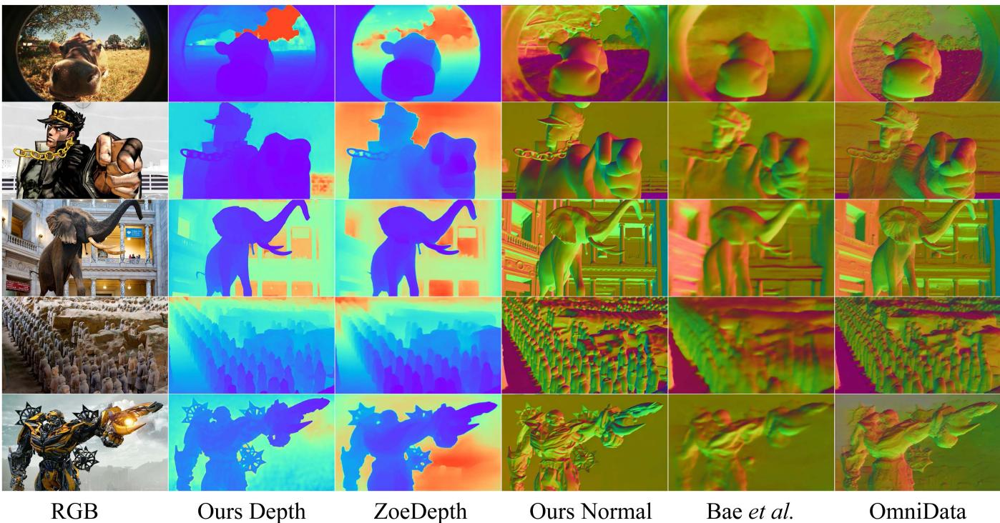
Fig. 12. Qualitative comparisons of metric depth and surface normals in the wild. We present visualization results of our predictions (‘Ours Depth’/‘Ours Normal’) and results from other metric depth (‘ZoeDepth’[36]) and surface normal methods (‘Bae et al.’ [33] and ‘OmniData’[35]).
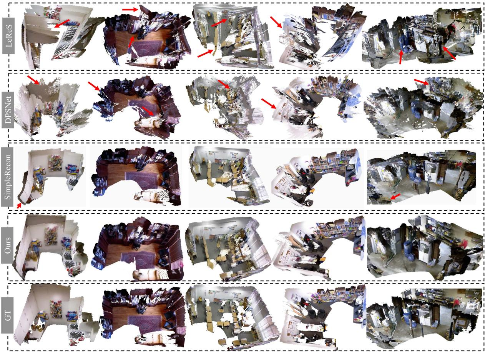
Fig. 13. Reconstruction of zero-shot scenes with multiple views. We sample several NYUv2 scenes for 3D reconstruction comparison. As our method can predict accurate metric depth, thus all frame’s predictions are fused directly for reconstruction. By contrast, LeReS [25]’s depth is up to an unknown scale and shift, causing noticeable distortions. For MVS methods, DPSNet [48] fails on low-texture backgrounds, while SimpleRecon [133] distorts regions without sufficient observations.
TABLE V
TRAINING AND TESTING DATASETS USED FOR EXPERIMENTS
| Datasets | Scenes | Source | Label | Size | #Cam. |
| Training Data | |||||
| DDAD [115] | Outdoor | Real-world | Depth | ~80K | 36+ |
| Lyft [116] | Outdoor | Real-world | Depth | ~50K | 6+ |
| Driving Stereo (DS) [117] | Outdoor | Real-world | Depth | ~181K | 1 |
| DIML [118] | Outdoor | Real-world | Depth | ~122K | 10 |
| Arogoverse2 [119] | Outdoor | Real-world | Depth | ~3515K | 6+ |
| Cityscapes [120] | Outdoor | Real-world | Depth | ~170K | 1 |
| DSÉC [121] | Outdoor | Real-world | Depth | ~26K | 1 |
| Mapillary PSD [90] | Outdoor | Real-world | Depth | 750K | 1000+ |
| Pandaset [122] | Outdoor | Real-world | Depth | ~48K | 6 |
| UASOL [123] | Outdoor | Real-world | Depth | ~1370K | 1 |
| Virtual KITTI [124] | Outdoor | Synthesized | Depth | 37K | 253 |
| Waymo [125] | Outdoor | Real-world | Depth | ~1M | |
| Matterport3d [126] | In/Out | Real-world | Depth + Normal | 144K | |
| Taskonomy [126] | Indoor | Real-world | Depth + Normal | ~4M | ~1M |
| Replica [127] ScanNet{†[108] | Indoor | Real-world | Depth + Normal | ~150K | 1 |
| Indoor | Real-world | Depth + Normal | ~2.5M | 1 | |
| HM3d [128] | Indoor | Real-world | Depth + Normal | ~2000K | 1 |
| Hypersim [129] | Indoor | Synthesized | Depth + Normal | 54K | 1 |
| Testing Data | |||||
| NYU [58] | Indoor | Real-world | Depth+Normal | 654 | 1 |
| KITTI [59] | Outdoor | Real-world | Depth | 652 | 4 |
| ScanNet†[108] | Indoor | Real-world | Depth+Normal | 700 | 1 |
| NuScenes (NS) [109] | Outdoor | Real-world | Depth | 10K | 6 |
| ETH3D [130] | Outdoor | Real-world | Depth | 431 | 1 |
| DIODE [111] | In/Out | Real-world | Depth | 771 | 11 |
| iBims-1 [110] | Indoor | Real-world | Depth | 100 | |
ScanNet is a non-zero-shot testing dataset for our ViT models.
We also tested on the ETH3D SLAM benchmarks, with results in Table VIII. Using our metric depth predictions, Droid-SLAM shows improved performance, although the gains are less pronounced in the smaller indoor scenes of ETH3D compared to KITTI.
Metrology in the wild: To demonstrate the robustness and accuracy of our recovered metric 3D shapes, we downloaded Flickr photos taken by various cameras and extracted coarse camera intrinsic parameters from their metadata. We utilized our CSTM_image model to reconstruct the metric shapes and measure the sizes of structures (marked in red in Fig. 14), with ground-truth sizes shown in blue. The results indicate that our measured sizes closely align with the ground-truth values.
Monocular reconstruction in the wild: To further visualize the reconstruction quality of our recovered metric depth, we randomly collect images from the internet and recover their metric 3D and normals. As there is no focal length provided, we select proper focal lengths according to the reconstructed shape and normal maps. The reconstructed pointclouds are colorized by their corresponding normals (Different views are marked by red and orange arrays in Fig. 15).
TABLE VI
QUANTITATIVE COMPARISON OF 3D SCENE RECONSTRUCTION WITH LERES [25], DPT [28], RCVD [131], SC-DEPTHV2 [132], AND TWO LEARNING-BASED MVS METHODS (DPSNET [48], SIMPLERECON [133]) ON 9 UNSEEN NYUV2 SCENES
| Method C-l1↓ F-score ↑ | |Basement_0001a|Bedroom_0015|Dining_room_0004| | F-score | F-score ↑ | |Kitchen_0008 C-l1↓ F-score 1 | |Classroom_0004|Playroom_0002| | F-score ↑ | C-l1↓ F-score ↑ | Office_0024 C-l1↓ F-score ↑ | Office_0004 [Dining_room_0033 | ||||||||
| C-l1↓ F-score | |||||||||||||||||
| RCVD [131] 0.364 | 0.276 | 0.074 | 0.582 | 0.462 | 0.251 | 0.053 0.620 | 0.187 | 0.327 | 0.791 | 0.187 | 0.324 0.241 | 0.646 | 0.217 | 0.445 | F-score ↑ 0.253 | ||
| SC-DepthV2 [132] 0.254 | 0.064 | 0.547 | 0.229 | 0.624 | 0.167 | 0.267 | 0.426 | 0.263 | 0.482 0.138 | 0.516 | 0.244 | 0.356 | 0.247 | ||||
| DPSNet [48] | 0.243 | 0.275 0.299 | 0.195 | 0.276 | 0.749 0.995 | 0.186 | 0.049 0.269 0.203 | 0.296 | 0.195 | 0.141 | 0.485 | 0.199 0.362 | 0.462 | 0.222 | 0.493 | ||
| DPT [25] | 0.698 | 0.251 | 0.226 | 0.396 | 0.364 | 0.126 0.388 | 0.269 | 0.245 | 0.210 | 0.279 | 0.751 | 0.185 | |||||
| LeReS [25] | 0.555 | 0.289 0.064 | 0.616 | 0.278 | 0.427 | 0.147 0.289 | 0.780 0.143 | 0.193 0.480 | 0.605 0.145 | 0.503 | 0.454 0.408 | 0.176 | 0.364 0.096 | 0.497 | 0.241 | 0.325 | |
| SimpleRecon [133] | 0.081 0.068 | 0.086 | 0.449 | 0.199 | 0.413 | 0.055 0.624 | 0.142 | 0.461 | 0.092 | 0.517 | 0.054 | 0.638 | 0.051 | 0.681 | 0.165 | 0.565 | |
| Ours | 0.042 | 0.695 0.736 | 0.059 | 0.610 | 0.159 | 0.485 | 0.050 | 0.645 0.145 | 0.445 | 0.036 | 0.814 | 0.069 | 0.638 | 0.045 | 0.700 | 0.060 | 0.663 |
Apart from the MVS approaches and ours, other methods have to align the scale with ground truth depth for each frame. As a result, our reconstructed 3D scenes achieve the best performance.
TABLE VII
COMPARISON WITH SOTA SLAM METHODS ON KITTI
| Method | Seq 00 | 08 | Seq 09 | Seq 10 | |||
| Translational RMS drift (trel, ↓) / Rotational RMS drift (rrel, ↓) | |||||||
| GeoNet [134] | 27.6/5.72 | 42.24/6.1420.12/7.67 | 9.28/4.34 | 18.59/7.85 | 23.94/9.81 | 20.73/9.1 | |
| VISO2-M [135] | 12.66/2.73 | 9.47/1.19 | 15.1/3.65 | 6.8/1.93 | 14.82/2.52 | 3.69/1.25 | 21.01/3.26 |
| ORB-V2 [12] | 11.43/0.58 | 10.34/0.26 | 9.04/0.26 | 14.56/0.26 | 11.46/0.28 | 9.3/0.26 | 2.57/0.32 |
| Droid [37] | 33.9/0.29 | 34.88/0.27 | 23.4/0.27 | 17.2/0.26 | 39.6/0.31 | 21.7/0.23 | 7/0.25 |
| Droid+Ours | 1.44/0.37 | 2.64/0.29 | 1.44/0.25 | 0.6/0.2 | 2.2/0.3 | 1.63/0.22 | 2.73/0.23 |
We input predicted metric depth to the Droid- SLAM [37] (‘Droid+Ours’), which outperform others by a large margin on trajectory accuracy.
TABLE VIII
COMPARISON OF VO ERROR ON ETH3D BENCHMARK
| Einstein global | Manquin4 | Motion1 | Plant- scene3 | sfm_house _loop | sfm_lab _room2 | |
| Average trajectory error (↓) | ||||||
| Droid | 4.7 | 0.88 | 0.83 | 0.78 | 5.64 | 0.55 |
| Droid + Ours | 1.5 | 0.69 | 0.62 | 0.34 | 4.03 | 0.53 |
| Droid + GT | 0.7 | 0.006 | 0.024 | 0.006 | 0.96 | 0.013 |
Droid SLAM system is input with our depth ('Droid + Ours'), and ground-truth depth (Droid + GT'). The average trajectory error is reported.
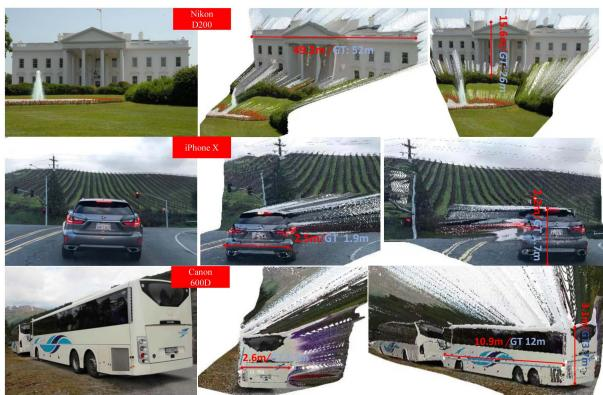
Fig. 14. Metrology of in-the-wild scenes. We collect several Flickr photos, which are captured by various cameras. With photographs’ metadata, we reconstruct the 3D metric shape and measure structures’ sizes. Red and blue marks are ours and ground-truth sizes respectively.
C. Ablation Study
Ablation on canonical transformation: We examine the impact of our proposed canonical transformations for input images (CSTM_input) and ground-truth labels (CSTM_output). Results are presented in Table IX. We trained the model on a mixed dataset of 90,000 images and tested it across six datasets. A naive baseline (Ours w/o CSTM) removes the CSTM modules, enforcing the same supervision as our approach. Without CSTM, the model struggles to converge on mixed metric datasets and fails to achieve metric predictions on zero-shot datasets. This limitation is why recent mixed-data training methods often resort to learning affine-invariant depth to sidestep metric challenges. In contrast, both of our CSTM methods enable the model to attain metric prediction capabilities and achieve comparable performance. Table I confirms this comparable performance. Thus, adjusting supervision and the appearance of input images during training effectively addresses metric ambiguity issues. Additionally, we compared our approach with CamConvs [38], which incorporates the camera model in the decoder using a 4-channel feature. While CamConvs uses the same training schedule, model, and data, it relies on the network to implicitly learn various camera models from image appearance, linking image size to real-world dimensions. We believe this approach strains data diversity and network capacity, resulting in lower performance.
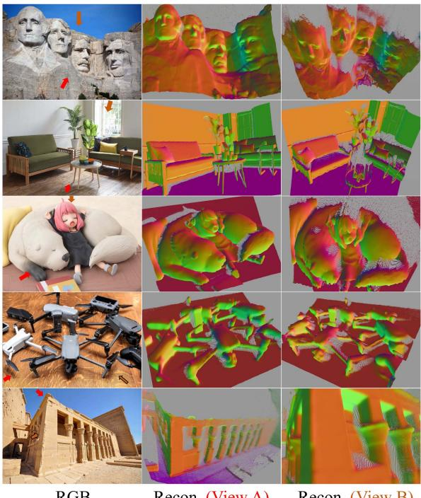
Fig. 15. Reconstruction from in-the-wild single images. We collect web images and select proper focal lengths. The reconstructed pointclouds are colorized by normals.
TABLE IX
EFFECTIVENESS OF OUR CSTM
| Method | DDAD Test set of train. data (AbsRel↓) | DS | NS KITTI Zero-shot test set | NYU t (AbsRel↓) |
| w/o CSTM | 0.530 | 0.582 0.394 | 1.00 0.568 | 0.584 |
| CamConvs [38] | 0.295 | 0.315 0.213 | 0.423 0.178 | 0.333 |
| Ours CSTM_image | 0.190 | 0.235 0.182 | 0.197 0.097 | 0.210 |
| Ours CSTM_label | 0.183 | 0.221 0.201 | 0.213 0.081 | 0.212 |
CamConvs [38] directly encodes various camera models in the network, while we perform a simple vet effective transformation to solve the metric ambiguity
TABLE X
EFFECTIVENESS OF RANDOM PROPOSAL NORMALIZATION LOSS
| Method | DDAD Lyft DS Test set of train. data (AbsRel↓) | NS | KITTI Zero-shot test set (AbsRel↓) | NYUv2 |
| baseline | 0.204 0.251 | 0.184 | 0.207 0.104 | 0.230 |
| baseline + SSIL [27] | 0.197 0.263 | 0.259 | 0.206 0.105 | 0.216 |
| baseline + RPNL | 0.190 0.235 | 0.182 | 0.197 0.097 | 0.210 |
Baseline is supervised by . SSIL is the scale-shift invariant loss proposed in [27].
TABLE XI EFFECTIVENESS OF JOINT OPTIMIZATION
| Method | DIODE(Outdoor) Depth (AbsRel↓) | NYU | DIODE(Outdoor) Normal (Med. error↓) | NYU |
| W.o. normal | 0.315 | 0.119 | ||
| W.o. depth | 16.25 | 8.78 | ||
| W.o mixed datasets | 0.614 | 0.116 | 18.94 | 9.50 |
| W.o. recurrent block | 0.309 | 0.127 | 16.51 | 9.31 |
| W.o. consistency | 0.310 | 0.121 | 16.45 | 9.72 |
| Ours | 0.304 | 0.114 | 14.91 | 8.77 |
For outdoor normal estimation, this module introduces geometry clues from large-scale depth data.
Ablation on canonical space: We investigate the impact of the canonical camera, specifically the canonical focal length. Our experiments indicate that a focal length of 1000 yields slightly better performance than the others; further details can be found in the supplementary materials.
Effectiveness ofthe random proposal normalization loss: To demonstrate the effectiveness of our random proposal normalization loss (RPNL), we conducted experiments on a sampled small dataset, with results shown in Table X. We tested on DDAD, Lyft, DrivingStereo (DS), NuScenes (NS), KITTI, and NYUv2. The ’baseline’ includes all losses except RPNL, which we compare to ’baseline + RPNL’ and ’baseline + SSIL [27]’. Our RPNL significantly enhances performance, while the scaleshift invariant loss [27], which normalizes the entire image, offers slight improvements.
Effectiveness of joint optimization: We assess the impact of joint optimization on both depth and normal estimation using small datasets sampled with ViT-small models over a 4-step iteration. The evaluation is conducted on the NYU indoor dataset and the DIODE outdoor dataset, both of which include normal labels for the convenience of evaluation. In Table XI, we start by training the same-architecture networks ‘without depth’ or ‘without normal’ prediction. Compared to ourjoint optimization approach, both single-modality models exhibit slightly worse performance. To further demonstrate the benefit of joint optimization and the incorporation of large-scale outdoor data prior to normal estimation, we train a model using only the Taskonomy dataset (i.e., ’W.o. mixed datasets’), which shows inferior results on DIODE(outdoor). We also verify the effectiveness of the recurrent blocks and the consistency loss. Removing either ofthem (‘W.o. consistency’/‘W.o. recurrent block’) could lead to drastic performance degradation for normal estimation, particularly for outdoor scenarios like DIODE(Outdoor). More visulization results and the efficiency analysis of the joint optimization module are presented in the supplementary materials.
Selection of intermediate normal representation: During optimization, unnormalized normal vectors are utilized as the intermediate representation. We explore some additional representations. Surprisingly, the naive unnormalized normal performs the best. Detailed quantitative results are reported in the supplementary materials.
Best optimizing steps: The best optimization steps (4 for ViT-S, 8 for ViT-L and ViT-g) are determined experimentally. Please refer to supplementary materials for more details.
V. CONCLUSION
In this paper, we introduce a family of geometric foundation models for zero-shot monocular metric depth and surface normal estimation. We propose solutions to address challenges in both metric depth estimation and surface normal estimation. To resolve depth ambiguity caused by varying focal lengths, we present a novel canonical camera space transformation method. Additionally, to overcome the scarcity ofoutdoor normal data labels, we introduce a joint depth-normal optimization framework that leverages knowledge from large-scale depth annotations.
Our approach enables the integration of millions of data samples captured by over 10,000 cameras to train a unified metricdepth and surface-normal model. To enhance the model’s robustness, we curate a dataset comprising over 16 million samples for training. Zero-shot evaluations demonstrate the effectiveness and robustness of our method. For downstream applications, our models are capable of reconstructing metric 3D from a single view, enabling metrology on randomly collected internet images and dense mapping of large-scale scenes. With their precision, generalization, and versatility, Metric3D v2 models serve as geometric foundational models for monocular perception.
REFERENCES
[1] B. Yang, S. Rosa, A. Markham, N. Trigoni, and H. Wen, “Dense 3D object reconstruction from a single depth view,” IEEE Trans. Pattern Anal. Mach. Intell., vol. 41, no. 12, pp. 2820–2834, Dec. 2019.
[2] J. Ju, C. W. Tseng, O. Bailo, G. Dikov, and M. Ghafoorian, “DG-Recon: Depth-guided neural 3D scene reconstruction,” in Proc. IEEE/CVF Int. Conf. Comput. Vis., 2023, pp. 18184–18194.
[3] L. Mescheder, M. Oechsle, M. Niemeyer, S. Nowozin, and A. Geiger, “Occupancy networks: Learning 3D reconstruction in function space,” in Proc. IEEE Conf. Comput. Vis. Pattern Recognit., 2019, pp. 4460–4470.
[4] K. Deng, A. Liu, J.-Y. Zhu, and D. Ramanan, “Depth-supervised NeRF: Fewer views and faster training for free,” in Proc. IEEE/CVF Conf. Comput. Vis. Pattern Recognit., 2022, pp. 12882–12891.
[5] B. Roessle, J. T. Barron, B. Mildenhall, P.P. Srinivasan, and M. Nießner, “Dense depth priors for neural radiance fields from sparse input views,” in Proc. IEEE/CVF Conf. Comput. Vis. Pattern Recognit., 2022, pp. 12892–12901.
[6] Z. Yu, S. Peng, M. Niemeyer, T. Sattler, and A. Geiger, “MonoSDF: Exploring monocular geometric cues for neural implicit surface reconstruction,” in Proc. Adv. Neural Inf. Process. Syst., 2022, pp. 25018–25032.
[7] C. Jiang et al., “H2-mapping: Real-time dense mapping using hierarchical hybrid representation,” 2023, arXiv:2306.03207.
[8] Y. Li et al., “BEVDepth: Acquisition of reliable depth for multi-view 3D object detection,” 2022, arXiv:2206.10092.
[9] Z. Li et al., “FB-OCC: 3D occupancy prediction based on forwardbackward view transformation,” 2023, arXiv:2307.01492.
[10] R. Fan, H. Wang, P. Cai, and M. Liu, “SNE-roadseg: Incorporating surface normal information into semantic segmentation for accurate freespace detection,” in Proc. Eur. Conf. Comput. Vis., Springer, 2020, pp. 340–356.
[11] J. Behley and C. Stachniss, “Efficient surfel-based slam using 3D laser range data in urban environments,” in Proc. Robot.: Sci. Syst., 2018, Art. no. 59.
[12] R. Mur-Artal and J. D. Tardós, “ORB-SLAM2: An open-source SLAM system for monocular, stereo and RGB-D cameras,” IEEE Trans. Robot., vol. 33, no. 5, pp. 1255–1262, 2017.
[13] T. Schops, T. Sattler, and M. Pollefeys, “Bad SLAM: Bundle adjusted direct RGB-D SLAM,” in Proc. IEEE/CVF Conf. Comput. Vis. Pattern Recognit., 2019, pp. 134–144.
[14] H. Zhu et al., “PonderV2: Pave the way for 3D foundataion model with a universal pre-training paradigm,” 2023, arXiv:2310.08586.
[15] J. Zhou, J. Wang, B. Ma, Y.-S. Liu, T. Huang, and X. Wang, “Uni3D: Exploring unified 3D representation at scale,” 2023, arXiv:2310.06773.
[16] H. Xu et al., “Unifying flow, stereo and depth estimation,” IEEE Trans. Pattern Anal. Mach. Intell., vol. 45, no. 11, pp. 13941–13958, Nov. 2023.
[17] W. Yuan, X. Gu, Z. Dai, S. Zhu, and P. Tan, “New CRFs: Neural window fully-connected CRFs for monocular depth estimation,” in Proc. IEEE Conf. Comput. Vis. Pattern Recognit., 2022, pp. 3906–3915.
[18] W. Yin, Y. Liu, and C. Shen, “Virtual normal: Enforcing geometric constraints for accurate and robust depth prediction,” IEEE Trans. Pattern Anal. Mach. Intell., vol. 44, no. 10, pp. 7282–7295, Oct. 2022.
[19] S. F. Bhat, I. Alhashim, and P. Wonka, “AdaBins: Depth estimation using adaptive bins,” in Proc. IEEE Conf. Comput. Vis. Pattern Recognit., 2021, pp. 4009–4018.
[20] G. Yang, H. Tang, M. Ding, N. Sebe, and E. Ricci, “Transformer-based attention networks for continuous pixel-wise prediction,” in Proc. IEEE Int. Conf. Comput. Vis., 2021, pp. 16249–16259.
[21] K. Xian et al., “Monocular relative depth perception with web stereo data supervision,” in Proc. IEEE Conf. Comput. Vis. Pattern Recognit., 2018, pp. 311–320.
[22] K. Xian, J. Zhang, O. Wang, L. Mai, Z. Lin, and Z. Cao, “Structure-guided ranking loss for single image depth prediction,” in Proc. IEEE Conf. Comput. Vis. Pattern Recognit., 2020, pp. 611–620.
[23] W. Chen, S. Qian, D. Fan, N. Kojima, M. Hamilton, and J. Deng, “OASIS: A large-scale dataset for single image 3D in the wild,” in Proc. IEEE Conf. Comput. Vis. Pattern Recognit., 2020, pp. 679–688.
[24] W. Chen, Z. Fu, D. Yang, and J. Deng, “Single-image depth perception in the wild,” in Proc. Adv. Neural Inf. Process. Syst., 2016, pp. 730–738.
[25] W. Yin et al., “Learning to recover 3D scene shape from a single image,” in Proc. IEEE Conf. Comput. Vis. Pattern Recognit., 2021, pp. 204–213.
[26] W. Yin et al., “Towards accurate reconstruction of 3D scene shape from a single monocular image,” IEEE Trans. Pattern Anal. Mach. Intell., vol. 45, no. 5, pp. 6480–6494, May 2023.
[27] R. Ranftl, K. Lasinger, D. Hafner, K. Schindler, and V. Koltun, “Towards robust monocular depth estimation: Mixing datasets for zero-shot crossdataset transfer,” IEEE Trans. Pattern Anal. Mach. Intell., vol. 44, no. 3, pp. 1623–1637, Mar. 2022.
[28] R. Ranftl, A. Bochkovskiy, and V. Koltun, “Vision transformers for dense prediction,” in Proc. IEEE Int. Conf. Comput. Vis., 2021, pp. 12179–12188.
[29] C. Zhang, W. Yin, Z. Wang, G. Yu, B. Fu, and C. Shen, “Hierarchical normalization for robust monocular depth estimation,” in Proc. Adv. Neural Inf. Process. Syst., 2022, pp. 14128–14139.
[30] W. Yin, Y. Liu, C. Shen, and Y. Yan, “Enforcing geometric constraints of virtual normal for depth prediction,” in Proc. IEEE Int. Conf. Comput. Vis., 2019, pp. 5683–5692.
[31] B. Ke, A. Obukhov, S. Huang, N. Metzger, R. C. Daudt, and K. Schindler, “Repurposing diffusion-based image generators for monocular depth estimation,” 2023, arXiv:2312.02145.
[32] T. Do, K. Vuong, S. I. Roumeliotis, and H. S. Park, “Surface normal estimation of tilted images via spatial rectifier,” in Proc. 16th Eur. Conf. Comput. Vis., Glasgow, U.K., Springer, 2020, pp. 265–280.
[33] G. Bae, I. Budvytis, and R. Cipolla, “Estimating and exploiting the aleatoric uncertainty in surface normal estimation,” in Proc. IEEE/CVF Int. Conf. Comput. Vis., 2021, pp. 13137–13146.
[34] X. Yang et al., “Polymax: General dense prediction with mask transformer,” in Proc. IEEE/CVF Winter Conf. Appl. Comput. Vis., 2024, pp. 1050–1061.
[35] A. Eftekhar, A. Sax, J. Malik, and A. Zamir, “Omnidata: A scalable pipeline for making multi-task mid-level vision datasets from 3D scans,” in Proc. IEEE Conf. Comput. Vis. Pattern Recognit., 2021, pp. 10786–10796.
[36] S. F. Bhat, R. Birkl, D. Wofk, P. Wonka, and M. Müller, “Zoedepth: Zero-shot transfer by combining relative and metric depth,” 2023, arXiv:2302.12288.
[37] Z. Teed and J. Deng, “DROID-SLAM: Deep visual SLAM for monocular, stereo, and RGB-D cameras,” in Proc. Int. Conf. Neural Inf. Process. Syst., 2021, pp. 16558–16569.
[38] J. Facil, B. Ummenhofer, H. Zhou, L. Montesano, T. Brox, and J. Civera, “CAM-Convs: Camera-aware multi-scale convolutions for single-view depth,” in Proc. IEEE Conf. Comput. Vis. Pattern Recognit., 2019, pp. 11826–11835.
[39] S. Peng et al., “Animatable neural implicit surfaces for creating avatars from videos,” 2022, arXiv:2203.08133.
[40] J. Huang, Y. Zhou, T. Funkhouser, and L. J. Guibas, “FrameNet: Learning local canonical frames of 3D surfaces from a single RGB image,” in Proc. IEEE/CVF Int. Conf. Comput. Vis., 2019, pp. 8638–8647.
[41] X. Qi, R. Liao, Z. Liu, R. Urtasun, and J. Jia, “GeoNet: Geometric neural network for joint depth and surface normal estimation,” in Proc. IEEE Conf. Comput. Vis. Pattern Recognit., 2018, pp. 283–291.
[42] G. Bae, I. Budvytis, and R. Cipolla, “IronDepth: Iterative refinement of single-view depth using surface normal and its uncertainty,” 2022, arXiv:2210.03676.
[43] J. Park, K. Joo, Z. Hu, C.-K. Liu, and I. So Kweon, “Non-local spatial propagation network for depth completion,” in Proc. 16th Eur. Conf. Comput. Vis., Glasgow, U.K., Springer, 2020, pp. 120–136.
[44] S. Shao, Z. Pei, X. Wu, Z. Liu, W. Chen, and Z. Li, “IEBins: Iterative elastic bins for monocular depth estimation,” 2023, arXiv:2309.14137.
[45] L. Lipson, Z. Teed, and J. Deng, “RAFT-Stereo: Multilevel recurrent field transforms for stereo matching,” in Proc. Int. Conf. 3D. Vis., 2021, pp. 218–227.
[46] Z. Teed and J. Deng, “RAFT: Recurrent all-pairs field transforms for optical flow,” in Proc. 16th Eur. Conf. Comput. Vis., Glasgow, U.K., Springer, 2020, pp. 402–419.
[47] L. Sun, W. Yin, E. Xie, Z. Li, C. Sun, and C. Shen, “Improving monocular visual odometry using learned depth,” IEEE Trans. Robot., vol. 38, no. 5, pp. 3173–3186, Oct. 2022.
[48] S. Im, H.-G. Jeon, S. Lin, and I.-S. Kweon, “DPSNet: End-to-end deep plane sweep stereo,” 2019, arXiv:1905.00538.
[49] R. Mur-Artal and J. D. Tardós, “ORB-SLAM2: An open-source SLAM system for monocular, stereo, and RGB-D cameras,” IEEE Trans. Robot., vol. 33, no. 5, pp. 1255–1262, Oct. 2017.
[50] R. Zhu et al., “Single view metrology in the wild,” in Proc. Eur. Conf. Comput. Vis., Springer, 2020, pp. 316–333.
[51] J. T. Barron and J. Malik, “Shape, illumination, and reflectance from shading,” IEEE Trans. Pattern Anal. Mach. Intell., vol. 37, no. 8, pp. 1670–1687, Aug. 2015.
[52] N. Wang, Y. Zhang, Z. Li, Y. Fu, W. Liu, and Y.-G. Jiang, “Pixel2mesh: Generating 3D mesh models from single RGB images,” in Proc. Eur. Conf. Comput. Vis., 2018, pp. 52–67.
[53] J. Wu, C. Zhang, X. Zhang, Z. Zhang, W. Freeman, and J. Tenenbaum, “Learning shape priors for single-view 3D completion and reconstruction,” in Proc. Eur. Conf. Comput. Vis., 2018, pp. 646–662.
[54] S. Saito, Z. Huang, R. Natsume, S. Morishima, A. Kanazawa, and H. Li, “PiFu: Pixel-aligned implicit function for high-resolution clothed human digitization,” in Proc. IEEE Conf. Comput. Vis. Pattern Recognit., 2019, pp. 2304–2314.
[55] S. Saito, T. Simon, J. Saragih, and H. Joo, “PiFuHD: Multi-level pixelaligned implicit function for high-resolution 3D human digitization,” in Proc. IEEE Conf. Comput. Vis. Pattern Recognit., 2020, pp. 84–93.
[56] A. Saxena, M. Sun, and A. Y. Ng, “Make3D: Learning 3D scene structure from a single still image,” IEEE Trans. Pattern Anal. Mach. Intell., vol. 31, no. 5, pp. 824–840, May 2009.
[57] C. Zhang et al., “Robust geometry-preserving depth estimation using differentiable rendering,” in Proc. IEEE Int. Conf. Comput. Vis., 2023, pp. 8917–8927.
[58] N. Silberman, D. Hoiem, P. Kohli, and R. Fergus, “Indoor segmentation and support inference from RGBD images,” in Proc. Eur. Conf. Comput. Vis., Springer, 2012, pp. 746–760.
[59] A. Geiger, P. Lenz, C. Stiller, and R. Urtasun, “Vision meets robotics: The KITTI dataset,” Int. J. Robot. Res., vol. 32, pp. 1231–1237, 2013.
[60] D. Eigen, C. Puhrsch, and R. Fergus, “Depth map prediction from a single image using a multi-scale deep network,” in Proc. Adv. Neural Inf. Process. Syst., 2014, pp. 2366–2374.
[61] V. Guizilini, I. Vasiljevic, D. Chen, R. Ambru¸s, and A. Gaidon, “Towards zero-shot scale-aware monocular depth estimation,” in Proc. IEEE/CVF Int. Conf. Comput. Vis., 2023, pp. 9233–9243.
[62] L. Piccinelli et al., “UniDepth: Universal monocular metric depth estimation,” in Proc. IEEE/CVF Conf. Comput. Vis. Pattern Recognit., 2024, pp. 10106–10116.
[63] K. Wang, F. Gao, and S. Shen, “Real-time scalable dense surfel mapping,” in Proc. Int. Conf. Robot. Automat., 2019, pp. 6919–6925.
[64] J. Wang et al., “NeuRIS: Neural reconstruction of indoor scenes using normal priors,” in Proc. Eur. Conf. Comput. Vis., Springer, 2022, pp. 139–155.
[65] X. Qi, Z. Liu, R. Liao, P. H. Torr, R. Urtasun, and J. Jia, “GeoNet : Iterative geometric neural network with edge-aware refinement for joint depth and surface normal estimation,” IEEE Trans. Pattern Anal. Mach. Intell., vol. 44, no. 2, pp. 969–984, Feb. 2022.
[66] X. Wang, D. Fouhey, and A. Gupta, “Designing deep networks for surface normal estimation,” in Proc. IEEE Conf. Comput. Vis. Pattern Recognit., 2015, pp. 539–547.
[67] D. Eigen and R. Fergus, “Predicting depth, surface normals and semantic labels with a common multi-scale convolutional architecture,” in Proc. IEEE Int. Conf. Comput. Vis., 2015, pp. 2650–2658.
[68] S. Liao, E. Gavves, and C. G. Snoek, “Spherical regression: Learning viewpoints, surface normals and 3D rotations on n-spheres,” in Proc. IEEE/CVF Conf. Comput. Vis. Pattern Recognit., 2019, pp. 9759–9767.
[69] L. Ladicky, B. Zeisl, and M. Pollefeys, “Discriminatively trained dense surface normal estimation,” in Proc. 13th Eur. Conf. Comput. Vis., Zurich, Switzerland, Springer, 2014, pp. 468–484.
[70] B. Li, C. Shen, Y. Dai, A. Van DenHengel, and M. He, “Depth and surface normal estimation from monocular images using regression on deep features and hierarchical CRFs,” in Proc. IEEE Conf. Comput. Vis. pattern Recognit., 2015, pp. 1119–1127.
[71] X. Long et al., “Adaptive surface normal constraint for geometric estimation from monocular images,” 2024, arXiv:2402.05869.
[72] X. Long et al., “Adaptive surface normal constraint for depth estimation,” in Proc. IEEE/CVF Int. Conf. Comput. Vis., 2021, pp. 12849–12858.
[73] W. Chen, D. Xiang, and J. Deng, “Surface normals in the wild,” in Proc. IEEE Int. Conf. Comput. Vis., 2017, pp. 1557–1566.
[74] G. Bae and A. J. Davison, “Rethinking inductive biases for surface normal estimation,” in Proc. IEEE Conf. Comput. Vis. Pattern Recognit., 2024, pp. 9535–9545.
[75] D. Sun, X. Yang, M.-Y. Liu, and J. Kautz, “PWC-Net: CNNs for optical flow using pyramid, warping, and cost volume,” in Proc. IEEE Conf. Comput. Vis. Pattern Recognit., 2018, pp. 8934–8943.
[76] H. Liu, T. Lu, Y. Xu, J. Liu, and L. Wang, “Learning optical flow and scene flow with bidirectional camera-lidar fusion,” 2023, arXiv:2303.12017.
[77] X. Cheng, P. Wang, and R. Yang, “Depth estimation via affinity learned with convolutional spatial propagation network,” in Proc. Eur. Conf. Comput. Vis., pp. 103–119, 2018.
[78] M. Hu, S. Wang, B. Li, S. Ning, L. Fan, and X. Gong, “PENet: Towards precise and efficient image guided depth completion,” in Proc. IEEE Int. Conf. Robot. Automat., 2021, pp. 13656–13662.
[79] Z. Ma, Z. Teed, and J. Deng, “Multiview stereo with cascaded epipolar raft,” in Proc. Eur. Conf. Comput. Vis., Springer, 2022, pp. 734–750.
[80] G. Xu, X. Wang, X. Ding, and X. Yang, “Iterative geometry encoding volume for stereo matching,” in Proc. IEEE/CVF Conf. Comput. Vis. Pattern Recognit., 2023, pp. 21919–21928.
[81] J. E. Lenssen, C. Osendorfer, and J. Masci, “Deep iterative surface normal estimation,” in Proc. IEEE/CVF Conf. Comput. Vis. Pattern Recognit., 2020, pp. 11247–11256.
[82] W. Zhao, S. Liu, Y. Wei, H. Guo, and Y.-J. Liu, “A confidence-based iterative solver of depths and surface normals for deep multi-view stereo,” in Proc. IEEE/CVF Int. Conf. Comput. Vis., 2021, pp. 6168–6177.
[83] W. Yin, Y. Liu, C. Shen, A. v. d. Hengel, and B. Sun, “The devil is in the labels: Semantic segmentation from sentences,” 2022, arXiv:2202.02002.
[84] A. Radford et al., “Learning transferable visual models from natural language supervision,” in Proc. Int. Conf. Mach. Learn., PMLR, 2021, pp. 8748–8763.
[85] J. Lambert, Z. Liu, O. Sener, J. Hays, and V. Koltun, “MSeg: A composite dataset for multi-domain semantic segmentation,” in Proc. IEEE Conf. Comput. Vis. Pattern Recognit., 2020, pp. 2879–2888.
[86] M. Oquab et al., “DINOV2: Learning robust visual features without supervision,” 2023, arXiv:2304.07193.
[87] A. Dosovitskiy et al., “An image is worth 16x16 words: Transformers for image recognition at scale,” 2021, arXiv:2010.11929.
[88] R. Rombach, A. Blattmann, D. Lorenz, P. Esser, and B. Ommer, “High-resolution image synthesis with latent diffusion models,” in Proc. IEEE/CVF Conf. Comput. Vis. Pattern Recognit., 2022, pp. 10684–10695.
[89] Y. Hold-Geoffroy et al., “A perceptual measure for deep single image camera calibration,” in Proc. IEEE Conf. Comput. Vis. Pattern Recognit., 2018, pp. 2354–2363.
[90] M. Lopez-Antequera, P. Gargallo, M. Hofinger, S. R. Bulò, Y. Kuang, and P. Kontschieder, “Mapillary planet-scale depth dataset,” in Proc. Eur. Conf. Comput. Vis., 2020, pp. 589–604.
[91] D. Singh and B. Singh, “Investigating the impact of data normalization on classification performance,” Appl. Soft Comput., vol. 97, 2019, Art. no. 105524.
[92] J. Li, R. Klein, and A. Yao, “A two-streamed network for estimating fine-scaled depth maps from single RGB images,” in Proc. IEEE Conf. Comput. Vis. Pattern Recognit., 2017, pp. 3372–3380.
[93] I. Laina, C. Rupprecht, V. Belagiannis, F. Tombari, and N. Navab, “Deeper depth prediction with fully convolutional residual networks,” in Proc. 4th Int. Conf. 3D Vis., 2016, pp. 239–248.
[94] L. Yang, B. Kang, Z. Huang, X. Xu, J. Feng, and H. Zhao, “Depth anything: Unleashing the power of large-scale unlabeled data,” 2024, arXiv:2401.10891.
[95] X. Guo, H. Li, S. Yi, J. Ren, and X. Wang, “Learning monocular depth by distilling cross-domain stereo networks,” in Proc. Eur. Conf. Comput. Vis., 2018, pp. 484–500.
[96] D. F. Fouhey, A. Gupta, and M. Hebert, “Unfolding an indoor origami world,” in Proc. 13th Eur. Conf. Comput. Vis., Zurich, Switzerland, Springer, 2014, pp. 687–702.
[97] A. Bansal, B. Russell, and A. Gupta, “Marr revisited: 2D-3D alignment via surface normal prediction,” in Proc. IEEE Conf. Comput. Vis. Pattern Recognit., 2016, pp. 5965–5974.
[98] P. Wang, X. Shen, B. Russell, S. Cohen, B. Price, and A. L. Yuille, “SURGE: Surface regularized geometry estimation from a single image,” in Proc. Adv. Neural Inf. Process. Syst., vol. 29, 2016.
[99] Z. Zhang, Z. Cui, C. Xu, Y. Yan, N. Sebe, and J. Yang, “Patternaffinitive propagation across depth, surface normal and semantic segmentation,” in Proc. IEEE/CVF Conf. Comput. Vis. Pattern Recognit., 2019, pp. 4106–4115.
[100] R. Wang, D. Geraghty, K. Matzen, R. Szeliski, and J.-M. Frahm, “VPLNet: Deep single view normal estimation with vanishing points and lines,” in Proc. IEEE/CVF Conf. Comput. Vis. Pattern Recognit., 2020, pp. 689–698.
[101] J. H. Lee, M.-K. Han, D. W. Ko, and I. H. Suh, “From big to small: Multiscale local planar guidance for monocular depth estimation,” 2019, arXiv: 1907.10326.
[102] O. F. Kar, T. Yeo, A. Atanov, and A. Zamir, “3D common corruptions and data augmentation,” in Proc. IEEE/CVF Conf. Comput. Vis. Pattern Recognit., 2022, pp. 18963–18974.
[103] Z. Liu, H. Mao, C.-Y. Wu, C. Feichtenhofer, T. Darrell, and S. Xie, “A convnet for the 2020s,” in Proc. IEEE Conf. Comput. Vis. Pattern Recognit., 2022, pp. 11976–11986.
[104] T. Darcet, M. Oquab, J. Mairal, and P. Bojanowski, “Vision transformers need registers,” 2023, arXiv:2309.16588.
[105] S. Xie, R. Girshick, P. Dollár, Z. Tu, and K. He, “Aggregated residual transformations for deep neural networks,” in Proc. IEEE Conf. Comput. Vis. Pattern Recognit., 2017, pp. 1492–1500.
[106] X. Zhai, A. Kolesnikov, N. Houlsby, and L. Beyer, “Scaling vision transformers,” in Proc. IEEE/CVF Conf. Comput. Vis. Pattern Recognit., 2022, pp. 12104–12113.
[107] A. Geiger, P. Lenz, and R. Urtasun, “Are we ready for autonomous driving? the KITTI vision benchmark suite,” in Proc. IEEE Conf. Comp. Vis. Pattern Recognit., 2012, pp. 3354–3361.
[108] A. Dai, A. X. Chang, M. Savva, M. Halber, T. Funkhouser, and M. Nießner, “ScanNet: Richly-annotated 3D reconstructions of indoor scenes,” in Proc. IEEE Conf. Comput. Vis. Pattern Recognit., 2017, pp. 5828–5839.
[109] H. Caesar et al., “nuScenes: A multimodal dataset for autonomous driving,” in Proc. IEEE Conf. Comput. Vis. Pattern Recognit., 2020, pp. 11621–11631.
[110] T. Koch, L. Liebel, F. Fraundorfer, and M. Korner, “Evaluation of CNN-based single-image depth estimation methods,” in Proc. Eur. Conf. Comput. Vis. Workshops, 2018, pp. 331–348.
[111] I. Vasiljevic et al., “DIODE: A dense indoor and outdoor depth dataset,” 2019, arXiv: 1908.00463.
[112] J. L. Schönberger, E. Zheng, M. Pollefeys, and J.-M. Frahm, “Pixelwise view selection for unstructured multi-view stereo,” in Proc. Eur. Conf. Comput. Vis., 2016, pp. 501–518.
[113] A. Knapitsch, J. Park, Q.-Y. Zhou, and V. Koltun, “Tanks and temples: Benchmarking large-scale scene reconstruction,” ACM Trans. Graph., vol. 36, no. 4, pp. 1–13, 2017.
[114] S. Li, X. Wu, Y. Cao, and H. Zha, “Generalizing to the open world: Deep visual odometry with online adaptation,” in Proc. IEEE Conf. Comput. Vis. Pattern Recognit., 2021, pp. 13184–13193.
[115] V. Guizilini, R. Ambrus, S. Pillai, A. Raventos, and A. Gaidon, “3D packing for self-supervised monocular depth estimation,” in Proc. IEEE Conf. Comput. Vis. Pattern Recognit., 2020, pp. 2482–2491.
[116] R. Kesten et al., “Level 5 perception dataset 2020,” 2019. [Online]. Available: https://level-5.global/level5/data
[117] G. Yang, X. Song, C. Huang, Z. Deng, J. Shi, and B. Zhou, “Drivingstereo: A large-scale dataset for stereo matching in autonomous driving scenarios,” in Proc. IEEE Conf. Comput. Vis. Pattern Recognit., 2019, pp. 899–908.
[118] J. Cho, D. Min, Y. Kim, and K. Sohn, “DIML/CVL RGB-D dataset: 2M RGB-D images of natural indoor and outdoor scenes,” 2021, arXiv:2110.11590.
[119] B. Wilson et al., “Argoverse 2: Next generation datasets for self-driving perception and forecasting,” 2021, arXiv:2301.00493.
[120] M. Cordts et al., “The cityscapes dataset for semantic urban scene understanding,” in Proc. IEEE Conf. Comput. Vis. Pattern Recognit., 2016, pp. 3213–3223.
[121] M. Gehrig, W. Aarents, D. Gehrig, and D. Scaramuzza, “DSEC: A stereo event camera dataset for driving scenarios,” IEEE Robot. Automat. Lett., vol. 6, no. 3, pp. 4947–4954, Jul. 2021.
[122] P. Xiao et al., “PandaSet: Advanced sensor suite dataset for autonomous driving,” in Proc. IEEE Int. Intell. Transp. Syst. Conf., 2021, pp. 3095–3101.
[123] Z. Bauer, F. Gomez-Donoso, E. Cruz, S. Orts-Escolano, and M. Cazorla, “UASOL, a large-scale high-resolution outdoor stereo dataset,” Sci. Data, vol. 6, no. 1, pp. 1–14, 2019.
[124] Y. Cabon, N. Murray, and M. Humenberger, “Virtual KITTI 2,” 2020, arXiv: 2001.10773.
[125] P. Sun et al., “Scalability in perception for autonomous driving: Waymo open dataset,” in Proc. IEEE/CVF Conf. Comput. Vis. Pattern Recognit., 2020, pp. 2446–2454.
[126] A. Zamir, A. Sax, W. Shen, L. Guibas, J. Malik, and S. Savarese, “Taskonomy: Disentangling task transfer learning,” in Proc. IEEE Conf. Comput. Vis. Pattern Recognit., 2018, pp. 3712–3722.
[127] J. Straub et al., “The replica dataset: A digital replica of indoor spaces,” 2019, arXiv: 1906.05797.
[128] S. K. Ramakrishnan et al., “Habitat-matterport 3D dataset (HM3D): 1000 large-scale 3D environments for embodied AI,” 2021, arXiv:2109.08238.
[129] M. Roberts et al., “Hypersim: A photorealistic synthetic dataset for holistic indoor scene understanding,” in Proc. IEEE/CVF Int. Conf. Comput. Vis., 2021, pp. 10912–10922.
[130] T. Schops et al., “A multi-view stereo benchmark with high-resolution images and multi-camera videos,” in Proc. IEEE Conf. Comput. Vis. Pattern Recognit., 2017, pp. 3260–3269.
[131] J. Kopf, X. Rong, and J.-B. Huang, “Robust consistent video depth estimation,” in Proc. IEEE Conf. Comput. Vis. Pattern Recognit., 2021, pp. 1611–1621.
[132] J.-W. Bian, H. Zhan, N. Wang, T.-J. Chin, C. Shen, and I. Reid, “Auto-rectify network for unsupervised indoor depth estimation,” IEEE Trans. Pattern Anal. Mach. Intell., vol. 44, no. 12, pp. 9802–9813, Dec. 2022.
[133] M. Sayed, J. Gibson, J. Watson, V. Prisacariu, M. Firman, and C. Godard, “Simplerecon: 3D reconstruction without 3D convolutions,” in Proc. Eur. Conf. Comput. Vis., Springer, 2022, pp. 1–19.
[134] Z. Yin and J. Shi, “GeoNet: Unsupervised learning of dense depth, optical flow and camera pose,” in Proc. IEEE Conf. Comput. Vis. Pattern Recognit., 2018, pp. 1983–1992.
[135] S. Song, M. Chandraker, and C. C. Guest, “High accuracy monocular SFM and scale correction for autonomous driving,” IEEE Trans. Pattern Anal. Mach. Intell., vol. 38, no. 4, pp. 730–743, Apr. 2016.
Mu Hu received the BEng and MS degrees in information engineering from Zhejiang University, Hangzhou, China, in 2019 and 2022, respectively. He is currently working towards the PhD degree with the Department of Electronic and Computer Engineering, Hong Kong University of Science and Technology, Hong Kong. His research interests include 3D reconstruction and generative models for robotics.
Wei Yin recieved the PhD degree from the University of Adelaide, Australia, in 2022. His research interests include world model, 3D reconstruction, and large vision language model.
Chi Zhang received the PhD degree from the School of Computer Science and Engineering, Nanyang Technological University, Singapore. He joined Westlake University, Hangzhou, China as an assistant professor in 2024. His research interests include large vision foundation models, multimodal models, and generative AI models.
Zhipeng Cai received the PhD degree in computer science from the University of Adelaide, Australia. His research interests include learning-based geometric perception, continual learning, and generative models.
Xiaoxiao Long received the BEng degree from Zhejiang University, Hangzhou, in 2018, and the PhD degree from Hong Kong University, Hong Kong, in 2022. His research interests include 3D AI-generated contents, neural rendering and 3D reconstruction.
Hao Chen received the BEng and MS degrees from Zhejiang University, Hangzhou, China, and the PhD degree from Adelaide University, in 2020. He joined Zhejiang University as an assistant professor in 2022. His research interests include semantic perception and generative models.
Kaixuan Wang received the BEng degree in automation from Southeast University, Nanjing, China, in 2016, and the PhD degree in electronic and computer engineering from the Hong Kong University of Science and Technology, Hong Kong, in 2020. His research interests include dense mapping and autonomous driving.
Gang Yu received the PhD degree from Nanyang Technological University in 2014. His research interests include generative AI, object detection, segmentation, human keypoint, human action recognition, and 3D reconstruction.
Chunhua Shen is a full professor with Zhejiang University, China. Prior to that, he worked with the University of Adelaide, Australia and National ICT Australia and Australian National University. His research focuses on general artificial intelligence for computer vision and robotics.
Shaojie Shen (Member, IEEE) joined the Department of Electronic and Computer Engineering, Hong Kong University of Science and Technology as an assistant professor in 2014 and was promoted to associate professor in 2020. His research focuses on robotics and unmanned aerial vehicles, including state estimation, sensor fusion, computer vision, localization and mapping, and autonomous navigation.
md/2024_Metric3D_v2__A_Versatile_Monocular_Geometric_Foundation_.md 预渲染生成。公式以 MathML 呈现，浏览器原生渲染，不依赖外部脚本或字体 CDN。